<!doctype html>
<html lang="en">
<head>
  <meta charset="utf-8">
  <meta name="viewport" content="width=device-width, initial-scale=1">
  <title>arxiv digest — 2026-09-23</title>
  <style>
:root {
  --bg: #ffffff;
  --fg: #1f2328;
  --muted: #59636e;
  --border: #d0d7de;
  --card: #f6f8fa;
  --link: #0969da;
}
body {
  max-width: 980px;
  margin: 0 auto;
  padding: 2rem 1rem 5rem;
  font-family: -apple-system, BlinkMacSystemFont, "Segoe UI", Helvetica, Arial, sans-serif;
  line-height: 1.55;
  color: var(--fg);
  background: var(--bg);
}
a { color: var(--link); }
img { max-width: 100%; height: auto; }
pre, code { background: var(--card); border-radius: 6px; }
pre { padding: 1rem; overflow-x: auto; }
blockquote { border-left: 4px solid var(--border); padding-left: 1rem; color: var(--muted); }
details { margin: 0.6rem 0; }
summary { cursor: pointer; font-weight: 600; }
.paper-figures-scroll {
  display: flex;
  gap: 1rem;
  overflow-x: auto;
  overscroll-behavior-x: contain;
  padding: 0.75rem 0.25rem 1rem;
  margin: 1rem 0 1.25rem;
  border-top: 1px solid var(--border);
  border-bottom: 1px solid var(--border);
  scroll-snap-type: x proximity;
}
.paper-figure-card {
  flex: 0 0 min(260px, 72vw);
  scroll-snap-align: start;
  background: var(--card);
  border: 1px solid var(--border);
  border-radius: 12px;
  padding: 0.55rem;
}
.paper-figure-card img {
  display: block;
  width: 100%;
  max-height: 240px;
  object-fit: contain;
  background: white;
  border-radius: 8px;
}
.paper-figure-caption {
  display: block;
  margin-top: 0.5rem;
  color: var(--muted);
  font-size: 0.85rem;
}
.figure-strip-hint {
  color: var(--muted);
  font-size: 0.9rem;
  margin-bottom: -0.3rem;
}
</style>
  <!-- MathJax: renders $...$ inline math and $$...$$ display math, plus
       \(...\) and \[...\]. Loaded from the official CDN; works offline
       once cached. Configured to skip code/pre blocks so arxiv IDs that
       look like dollar amounts don't get mangled. -->
  <script>
    window.MathJax = {
      tex: {
        inlineMath: [['$', '$'], ['\\(', '\\)']],
        displayMath: [['$$', '$$'], ['\\[', '\\]']],
        processEscapes: true,
        processEnvironments: true
      },
      options: {
        skipHtmlTags: ['script', 'noscript', 'style', 'textarea', 'pre', 'code'],
        ignoreHtmlClass: 'tex2jax_ignore',
        processHtmlClass: 'tex2jax_process'
      }
    };
  </script>
  <script id="MathJax-script" async
    src="https://cdn.jsdelivr.net/npm/mathjax@3/es5/tex-chtml.js"></script>
</head>
<body>
<header style="background-color: #333; color: white; padding: 15px; margin-bottom: 20px;">
  <h1 style="margin: 0; font-size: 24px;">
    <a href="https://ochelpan.github.io/arXiv_clean/" style="color: white; text-decoration: none;">Main</a>
  </h1>
</header>

<h1>Daily arXiv Report</h1>

<hr>
<p>
<a href="index.html">← Index</a>
 · <a href="papers_02.html">← Previous</a> · <a href="papers_04.html">Next →</a>
</p>
<hr>

<h2>Papers 41–60</h2>
<p><a id="paper-2609.23960"></a></p>
<h3 id="global-zero-excitation-state-preparation-through-subsystem-cooling"><a href="http://arxiv.org/abs/2609.23960v1">Global zero-excitation state preparation through subsystem cooling</a></h3>
<p><strong>Authors:</strong> Kerstin Beer, Daniel Burgarth<br>
<strong>Type:</strong> theory · <strong>Category:</strong> other · <strong>PDF:</strong> <a href="https://arxiv.org/pdf/2609.23960v1">https://arxiv.org/pdf/2609.23960v1</a><br>
<strong>Analysis basis:</strong> full PDF text, analyzed in chunks
<strong>Topic relevance:</strong> <code>analog quantum simulation</code> <strong>3/5</strong> · <code>correlated / nonlocal dissipation</code> <strong>3/5</strong> · <code>driven-dissipative phase transition</code> <strong>3/5</strong> · <code>methods for driven-dissipative</code> <strong>3/5</strong> · <code>non-equilibrium universality</code> <strong>2/5</strong> · <code>quantum measurements</code> <strong>2/5</strong> · <code>Keldysh / 2PI / non-Gaussian methods</code> <strong>1/5</strong></p>
<div class="figure-strip-hint">↔ Scroll figures horizontally</div>
<div class="paper-figures-scroll">
<figure class="paper-figure-card">
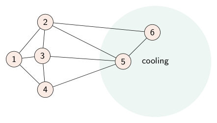
<figcaption class="paper-figure-caption"><b>Fig 1.</b> FIG. 1: Schematic illustration of localized cooling applied to only part of a coupled qubit system. The Hamiltonian interactions can mediate the influence of the dissipative subsystem to qubits that are not cooled directly.</figcaption>
</figure>
<figure class="paper-figure-card">
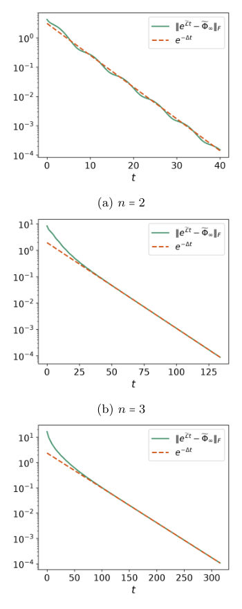
<figcaption class="paper-figure-caption"><b>Fig 2.</b> FIG. 2: Convergence of the dynamical map to its asymptotic cooling map. The solid curves show the Frobenius norm ∥e ̃ Lt −̃Φ∞∥F for systems of (a) two, (b) three, and (c) four qubits. The vertical axis is logarithmic. The dashed curves decay as e−∆t, with ∆ obtained from the Liouvillian spectrum.</figcaption>
</figure>
<figure class="paper-figure-card">
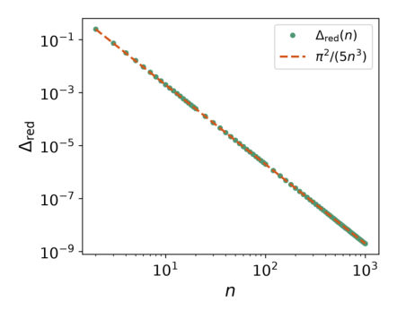
<figcaption class="paper-figure-caption"><b>Fig 3.</b> FIG. 3: System-size scaling of the single-excitation gap estimate. The points show ∆red(n) obtained numerically from the reduced single-excitation effective Hamiltonian for systems up to n = 1000 with γ1 = 1. Both axes are logarithmic. The dashed line shows the corresponding analytical asymptotic result ∆red(n) = π2/(5n3).</figcaption>
</figure>
</div>

<p><strong>Summary.</strong> This paper develops a graph-theoretic criterion to determine when cooling a small part of a large, interacting quantum system can force the entire system into its lowest energy (zero-excitation) state. By analyzing the dynamics under a GKLS master equation, the authors show that the structure of the system's interactions, specifically the 'zero-forcing set' property, dictates the possibility of global state preparation. This offers a powerful tool for designing quantum simulators with limited access to cooling mechanisms.</p>
<p><strong>Why it may be interesting.</strong> This work provides a powerful, general graph-theoretic criterion for achieving global quantum control (ground state preparation) using only local environmental coupling, which is highly relevant for designing realistic quantum simulators.</p>
<details>
<summary>Detailed structure</summary>
<p><strong>Main problem.</strong> The paper investigates the conditions under which localized dissipation acting on a subset of an interacting quantum system can drive the entire system to a unique, globally attractive zero-excitation state.</p>
<p><strong>Main result.</strong> Sufficient conditions are established, linking global state preparation to the graph-theoretic property that the dissipative subsystem forms a zero-forcing set of the excitation-transfer graph.</p>
<p><strong>Method.</strong> The analysis uses the GKLS master equation framework, combining rigorous mathematical proofs with graph theory (zero-forcing sets) to derive structural criteria for convergence.</p>
<p><strong>Model / system.</strong> The system is modeled as coupled qubits governed by a Hamiltonian $H$ and dynamics described by a GKLS master equation with local jump operators. The study is illustrated using a nearest-neighbor Heisenberg spin chain.</p>
<p><strong>Key observables.</strong> Global zero-excitation state, the zero-forcing property of the excitation-transfer graph, and the reduced single-excitation gap ($\Delta_{	ext{red}}(n)$).</p>
<p><strong>Important parameters / regimes.</strong> The scaling estimate for the reduced gap is found to be $\Delta_{	ext{red}}(n) \propto n^{-3}$, indicating efficient cooling.</p>
<p><strong>Assumptions / limitations.</strong> The analysis is restricted to excitation-number conserving qubit systems and assumes localized, lowering-type dissipation.</p>
<p><strong>Figures summary.</strong> Figure 1 schematically illustrates localized cooling on a subset of qubits. Figure 3 shows the system-size scaling of the single-excitation gap estimate, demonstrating $n^{-3}$ decay.</p>
<p><strong>Paper structure.</strong> The paper progresses from defining the physical problem (localized cooling) to establishing mathematical conditions (Proposition II.1) using the GKLS equation, connecting these conditions to graph theory (zero-forcing sets), and finally providing quantitative estimates using a specific model (Heisenberg chain) to confirm the scaling.</p>
</details>
<details>
<summary>Abstract</summary>
<p>Preparing interacting quantum systems in low-energy or ground states is a fundamental task in quantum simulation and quantum information processing. In realistic settings, dissipation and active cooling can typically be engineered only on a limited subset of the system. We study the dissipative dynamics of excitation-number conserving quantum systems governed by a GKLS master equation with local jump operators acting on a subset of qubits. We establish sufficient conditions under which such localized dissipation drives the full system to a unique globally attractive zero-excitation state. In particular, we prove that if the Hamiltonian generates excitation transfer described by a graph for which the dissipative subsystem forms a zero forcing set, then the zero-excitation state is the unique globally attractive stationary state. When this state coincides with a ground state of the Hamiltonian, the same mechanism realizes ground-state cooling. Our results provide a graph-theoretic criterion for global state preparation from localized dissipation, which we illustrate using a nearest-neighbor Heisenberg spin chain. For this model, a reduction to the single-excitation sector further yields a scaling estimate with the length of the chain which indicates efficient cooling.</p>
</details>
<p><sub><a href="#top">↑ back to top</a></sub></p>

<p><a id="paper-2609.24427"></a></p>
<h3 id="heterogeneous-planar-diffusion-with-axisymmetric-power-law-decaying-diffusion-coefficient-under-stochastic-resetting"><a href="http://arxiv.org/abs/2609.24427v1">Heterogeneous planar diffusion with axisymmetric power-law decaying diffusion coefficient under stochastic resetting</a></h3>
<p><strong>Authors:</strong> Trifce Sandev, Sebastien Fumeron, Malte Henkel, Ervin K. Lenzif<br>
<strong>Type:</strong> theory · <strong>Category:</strong> statistical mechanics · <strong>PDF:</strong> <a href="https://arxiv.org/pdf/2609.24427v1">https://arxiv.org/pdf/2609.24427v1</a><br>
<strong>Analysis basis:</strong> full PDF text, analyzed in chunks
<strong>Topic relevance:</strong> <code>methods for driven-dissipative</code> <strong>3/5</strong> · <code>non-equilibrium universality</code> <strong>3/5</strong> · <code>Keldysh / 2PI / non-Gaussian methods</code> <strong>2/5</strong> · <code>analog quantum simulation</code> <strong>2/5</strong> · <code>correlated / nonlocal dissipation</code> <strong>2/5</strong> · <code>driven-dissipative phase transition</code> <strong>2/5</strong> · <code>quantum measurements</code> <strong>2/5</strong> · <code>scars &amp; prethermalization</code> <strong>1/5</strong></p>
<div class="figure-strip-hint">↔ Scroll figures horizontally</div>
<div class="paper-figures-scroll">
<figure class="paper-figure-card">
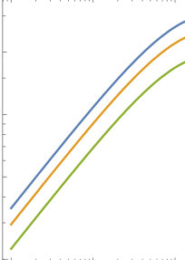
<figcaption class="paper-figure-caption"><b>Fig 1.</b> Figure 1: MSD (20) for α = 0 (blue line), α = 1/2 (red line) and α = 1 (green line). We set for ¯r = 1, D0 = 1.</figcaption>
</figure>
<figure class="paper-figure-card">
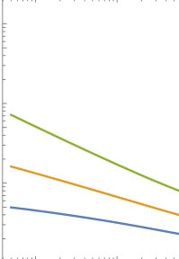
<figcaption class="paper-figure-caption"><b>Fig 2.</b> Figure 2: MFPT versus resetting rate ¯r for D0 = 1, τ = 1, R = 1; for α = 0, i.e., Eq. (24) (blue line); for α = 1/2, i.e., Eq. (25) (red line); for α = 1, i.e., Eq. (26) (green line).</figcaption>
</figure>
<figure class="paper-figure-card">
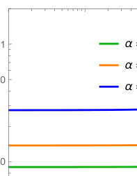
<figcaption class="paper-figure-caption"><b>Fig 3.</b> Figure 3: Threshold time t1/2 versus resetting rate ¯r for α = 0 (green), α = 1/2 (red) and α = 1 (blue), with D0 = R = 1. Each curve diverges at the critical rate ¯r∗(dotted vertical lines): beyond ¯r∗more than half of the population remains confined within R and t1/2 no longer exists.</figcaption>
</figure>
<figure class="paper-figure-card">
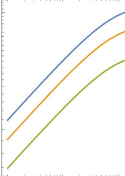
<figcaption class="paper-figure-caption"><b>Fig 4.</b> Figure 4: MSD (45) for α = 0 (blue line), α = 1/2 (red line) and α = 1 (green line). We have set for ¯r = 1, D0 = 1 and µ = 1/2.</figcaption>
</figure>
<figure class="paper-figure-card">
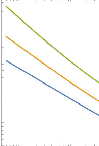
<figcaption class="paper-figure-caption"><b>Fig 5.</b> Figure 5: MFPT versus resetting rate ¯r for D0 = 1, τ = 1, R = 1, µ = 3/4; for α = 0, i.e., Eq. (53) (blue line); for α = 1/2, i.e., Eq. (54) (red line); for α = 1, i.e., Eq. (55) (green line).</figcaption>
</figure>
</div>

<p><strong>Summary.</strong> This work provides a detailed theoretical study of particle diffusion in a spatially heterogeneous environment under the influence of stochastic resetting. It derives key transport properties like the MSD and MFPT, showing how the interplay between spatial decay, memory, and resetting leads to non-trivial, non-equilibrium steady states. The findings are valuable for understanding anomalous transport in complex physical systems.</p>
<p><strong>Why it may be interesting.</strong> While focused on classical diffusion, the mathematical techniques used—such as analyzing non-equilibrium steady states, anomalous diffusion, and optimal control (minimizing MFPT)—are highly relevant to open quantum systems and quantum transport theory.</p>
<details>
<summary>Detailed structure</summary>
<p><strong>Main problem.</strong> The paper analyzes the dynamics of two-dimensional isotropic diffusion in a heterogeneous medium subjected to stochastic resetting, incorporating memory effects.</p>
<p><strong>Main result.</strong> The mean squared displacement saturates at long times, and the mean first-passage time exhibits an optimal resetting rate that minimizes the time.</p>
<p><strong>Method.</strong> The analysis employs the Fokker-Planck equation, solving it in the Laplace domain, and incorporating subordination techniques to model memory effects via fractional derivatives.</p>
<p><strong>Model / system.</strong> The model is 2D isotropic diffusion with a radially decaying diffusion coefficient $D(
ho) = D_0/
ho^2$, subjected to Poissonian stochastic resetting. Memory effects are introduced using a power-law kernel.</p>
<p><strong>Key observables.</strong> Non-equilibrium stationary state (NESS), Mean Squared Displacement (MSD), Mean First-Passage Time (MFPT), and the threshold time ($t_{1/2}$).</p>
<p><strong>Important parameters / regimes.</strong> Resetting rate ($ar{r}$), diffusion coefficient decay parameter ($
ho^{-2}$), and memory exponent ($\mu$).</p>
<p><strong>Assumptions / limitations.</strong> The analysis treats the Itô, Stratonovich, and Hänggi–Klimontovich noise interpretations within a unified framework.</p>
<p><strong>Figures summary.</strong> Figures illustrate the saturation of MSD over time for different noise interpretations, and show the dependence of MFPT on the resetting rate, revealing an optimal minimum.</p>
<p><strong>Paper structure.</strong> The paper first analyzes the basic heterogeneous diffusion with resetting, deriving NESS and MSD. It then extends the analysis to include memory effects via subordination, leading to the fractional Fokker-Planck equation and analyzing the resulting first-passage statistics.</p>
</details>
<details>
<summary>Abstract</summary>
<p>We analyse two-dimensional isotropic heterogeneous diffusion with a radially decaying diffusion coefficient $D(ρ)=D_0/ρ^2$, subject to Poissonian stochastic resetting to the origin. Since multiplicative noise makes the process interpretation-dependent, we treat the Itô, Stratonovich, and Hänggi--Klimontovich prescriptions within a single approach. For each, we obtain the exact probability density function, the non-equilibrium stationary state induced by resetting, the mean squared displacement, and the first-passage properties. The non-equilibrium stationary state is governed by modified Bessel functions and departs from the Laplace form found for homogeneous diffusion under resetting, while the mean squared displacement saturates at long times as $\langleρ^2\rangle\sim\bar{r}^{-1/2}$, $\bar{r}$ being the resetting rate. The mean first-passage time to an absorbing boundary exhibits an optimal resetting rate at which it is minimised. In addition, we incorporate memory effects through a subordination (continuous-time random walk) approach with a power-law kernel, deriving the fractional Fokker--Planck equation together with the non-equilibrium stationary state, the mean squared displacement expressed via the three-parameter Mittag-Leffler function, and the first-passage statistics; the optimal resetting rate increases as the memory exponent decreases.</p>
</details>
<p><sub><a href="#top">↑ back to top</a></sub></p>

<p><a id="paper-2609.23295"></a></p>
<h3 id="non-markovian-quantum-dynamics-of-exciton-polaritons"><a href="http://arxiv.org/abs/2609.23295v1">Non-Markovian Quantum Dynamics of Exciton-Polaritons</a></h3>
<p><strong>Authors:</strong> Rajanya Sarkar, Pritha Ghosh, Arshath Manjalingal, David R. Reichman, Arkajit Mandal<br>
<strong>Type:</strong> theory · <strong>Category:</strong> other · <strong>PDF:</strong> <a href="https://arxiv.org/pdf/2609.23295v1">https://arxiv.org/pdf/2609.23295v1</a><br>
<strong>Analysis basis:</strong> full PDF text, analyzed in chunks
<strong>Topic relevance:</strong> <code>Tavis-Cummings &amp; cavity-many-emitter</code> <strong>3/5</strong> · <code>correlated / nonlocal dissipation</code> <strong>3/5</strong> · <code>methods for driven-dissipative</code> <strong>3/5</strong> · <code>Keldysh / 2PI / non-Gaussian methods</code> <strong>2/5</strong> · <code>driven-dissipative phase transition</code> <strong>2/5</strong> · <code>non-equilibrium universality</code> <strong>2/5</strong> · <code>analog quantum simulation</code> <strong>1/5</strong> · <code>quantum measurements</code> <strong>1/5</strong></p>
<div class="figure-strip-hint">↔ Scroll figures horizontally</div>
<div class="paper-figures-scroll">
<figure class="paper-figure-card">
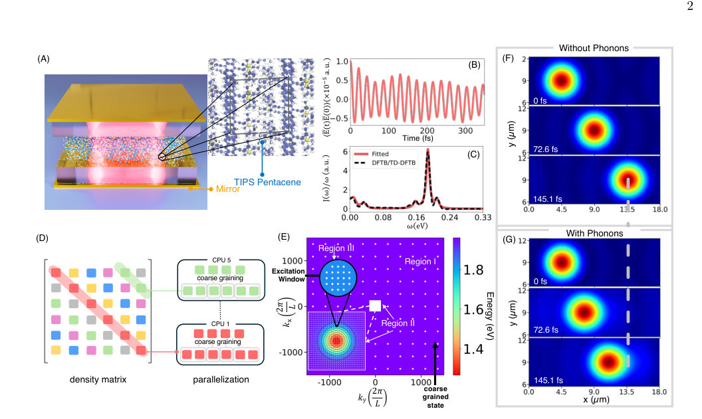
<figcaption class="paper-figure-caption"><b>Fig 1.</b> FIG. 1. (A) Schematic illustration of a Fabry-P´erot optical cavity filled with TIPS-pentacene. (B) Time-dependent energy gap correlation function computed using on-the-fly DFTB/TD-DFTB simulations. (C) Spectral density J(ω) obtained from the DFTB/TD-DFTB simu- lations compared with the fitted spectral density. (D) Schematic illustration of the parallel computational scheme for evolving the diagonal elements of the density matrix, which are subsequently coarse-grained. (E) Schematic illustration of our coarse-graining approach. (F)-(G) Snapshots of the exciton-polariton propagation in two dimensional real space at 0 fs, 72.6 fs and 145.1 fs, respectively, in the absence (F) and presence (G)...</figcaption>
</figure>
<figure class="paper-figure-card">
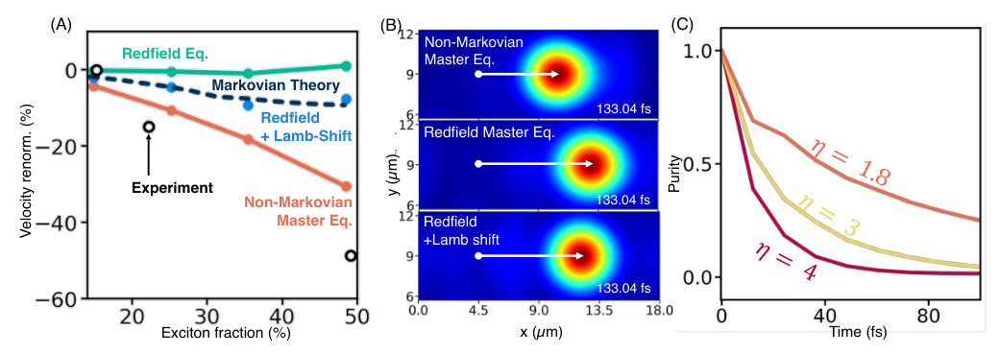
<figcaption class="paper-figure-caption"><b>Fig 2.</b> FIG. 2. (A) Group velocities extracted from non-Markovian quantum dynamical simulations and various Markovian approaches, compared to the experimentally determined group velocities obtained from Ref. [9]. (B) A snapshot of the polaritonic density predicted from the non-Markovian master equation approach, the Redfield approach (with no Lamb shift term) and the Redfield approach with the Lamb shift term, at time t = 133.04 fs. (C) Time-dependent purity for three different refractive indices with η = 1.8 corresponding to the refractive index of TIPS-pentacene.</figcaption>
</figure>
</div>

<p><strong>Summary.</strong> This paper tackles the challenge of simulating exciton-polariton dynamics quantum mechanically by developing a non-Markovian master equation approach. By employing advanced computational techniques like time-local propagation and k-space coarse-graining, the authors accurately model phonon-induced decoherence. The key finding is that only the non-Markovian treatment can reproduce the experimentally observed renormalization of the polariton group velocity.</p>
<p><strong>Why it may be interesting.</strong> This work directly addresses open quantum system dynamics in solid-state light-matter systems, providing a rigorous quantum mechanical tool to study decoherence and transport beyond the standard Markovian assumptions common in quantum optics.</p>
<details>
<summary>Detailed structure</summary>
<p><strong>Main problem.</strong> Developing an accurate, fully quantum mechanical simulation of non-equilibrium exciton-polariton dynamics that avoids computationally prohibitive methods and semi-classical approximations.</p>
<p><strong>Main result.</strong> The non-Markovian approach successfully captures the experimentally observed renormalization of the polariton group velocity, a feature that conventional Markovian theories fail to reproduce.</p>
<p><strong>Method.</strong> The authors employ a non-Markovian Nakajima-Zwanzig master equation, solved using a time-local propagation scheme combined with coarse-graining of the wave vector space.</p>
<p><strong>Model / system.</strong> The system involves exciton-polaritons (hybrid light-matter quasiparticles) coupled to a phonon bath, modeled using a generalized Holstein-Tavis-Cummings Hamiltonian. The dynamics are simulated in the lower-polariton subspace.</p>
<p><strong>Key observables.</strong> Exciton-polariton group velocity renormalization, phonon-induced decoherence (purity), and polaritonic density evolution.</p>
<p><strong>Important parameters / regimes.</strong> Phonon coupling strength, time scale (sub-picosecond), and the distinction between Markovian and non-Markovian regimes.</p>
<p><strong>Assumptions / limitations.</strong> The memory kernel is treated to second order in the polariton-phonon coupling, and the wave vector space is coarse-grained using a three-tiered approach.</p>
<p><strong>Figures summary.</strong> Figures compare group velocities from non-Markovian simulations against various Markovian approaches and experimental data, showing clear discrepancies. Snapshots illustrate density evolution under different theoretical treatments.</p>
<p><strong>Paper structure.</strong> The paper develops the non-Markovian master equation, addresses computational scaling issues via time-local propagation and k-space coarse-graining, and then applies this framework to simulate polariton transport, comparing results against established Markovian limits.</p>
</details>
<details>
<summary>Abstract</summary>
<p>Exciton-polaritons, hybrid light-matter quasiparticles formed when a material interacts with a confined electric field, have experimentally been shown to exhibit mesoscale coherent quantum propagation that remains robust at room temperature. However, an accurate and direct quantum dynamical simulation of this phenomenon that does not resort to semi-classical approximations is prohibitively expensive computationally, limiting the microscopic understanding of the rich dynamical interplay among phonons, photons, and electrons under collective light-matter coupling. To address this fundamental challenge, we develop a non-Markovian master equation approach which enables the fully quantum mechanical simulation of non-equilibrium exciton-polariton dynamics and captures phonon-induced decoherence and dissipation beyond the conventional Markovian limit. To carry out this task, a procedure is developed in which the wave vector space is coarse-grained and each diagonal element of the density matrix is evolved in parallel. To demonstrate the utility of this approach, we simulate exciton-polariton transport in TIPS-pentacene. We find that our approach reasonably captures the experimentally observed renormalization of the polariton group velocity, which originates from the phonon-induced non-Markovian Lamb shift. We further show that this renormalization cannot be reproduced within conventional Markovian theories.</p>
</details>
<p><sub><a href="#top">↑ back to top</a></sub></p>

<p><a id="paper-2609.22815"></a></p>
<h3 id="asymmetric-two-way-gaussian-quantum-steering-in-coupled-lossy-waveguides"><a href="http://arxiv.org/abs/2609.22815v1">Asymmetric Two-Way Gaussian Quantum Steering in Coupled Lossy Waveguides</a></h3>
<p><strong>Authors:</strong> Hafsa Zia, Haleema Sadia Qureshi, Shakir Ullah, Mohamed Amazioug, Fazal Ghafoor<br>
<strong>Type:</strong> theory · <strong>Category:</strong> quantum information and computing · <strong>PDF:</strong> <a href="https://arxiv.org/pdf/2609.22815v1">https://arxiv.org/pdf/2609.22815v1</a><br>
<strong>Analysis basis:</strong> full PDF text, analyzed in chunks
<strong>Topic relevance:</strong> <code>correlated / nonlocal dissipation</code> <strong>3/5</strong> · <code>driven-dissipative phase transition</code> <strong>3/5</strong> · <code>methods for driven-dissipative</code> <strong>3/5</strong> · <code>analog quantum simulation</code> <strong>2/5</strong> · <code>non-equilibrium universality</code> <strong>2/5</strong> · <code>Keldysh / 2PI / non-Gaussian methods</code> <strong>1/5</strong> · <code>interference shaping light</code> <strong>1/5</strong> · <code>quantum measurements</code> <strong>1/5</strong></p>
<div class="figure-strip-hint">↔ Scroll figures horizontally</div>
<div class="paper-figures-scroll">
<figure class="paper-figure-card">
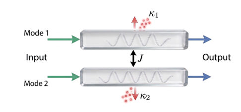
<figcaption class="paper-figure-caption"><b>Fig 1.</b> FIG. 1. Schematic of coupled lossy waveguides. Two single- mode optical waveguides are placed in close proximity, en- abling evanescent field coupling. The modes exchange pho- tons coherently with coupling strength J while experiencing optical loss at rate κ.</figcaption>
</figure>
<figure class="paper-figure-card">
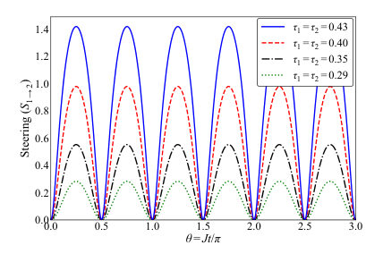
<figcaption class="paper-figure-caption"><b>Fig 2.</b> FIG. 2. Effect of nonclassicality on Gaussian quantum steer- ing is plotted against dimensionless interaction time, for fixed parameter values κ1 = κ2 = κ = 0.0, µ1 = µ2 = µ = 1, ϕ1 = 0 and ϕ2 = π/2. In each case, dotted-green, dot- dashed black, dashed-red, and solid blue lines represent re- sults τ1 = τ2 = τ = 0.29, 0.35, 0.40, and 0.43, respectively.</figcaption>
</figure>
<figure class="paper-figure-card">
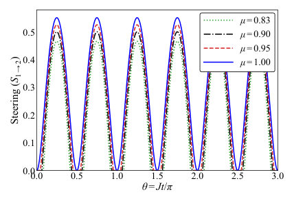
<figcaption class="paper-figure-caption"><b>Fig 3.</b> FIG. 3. Effect of purity on Gaussian quantum steering is plotted against dimensionless interaction time, for fixed pa- rameter values κ1 = κ2 = κ = 0.0, τ1 = τ2 = τ = 0.35, ϕ1 = 0 and ϕ2 = π/2. In each case, dotted-green, dot-dashed black, dashed-red, and solid blue lines represent µ1 = µ2 = µ = 0.83, 0.90, 0.95, and 1.0, respectively.</figcaption>
</figure>
<figure class="paper-figure-card">
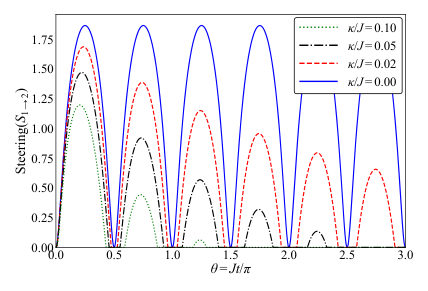
<figcaption class="paper-figure-caption"><b>Fig 4.</b> FIG. 4. Effect of optical loss is plotted against dimensionless interaction time, for fixed parameter values τ1 = τ2 = τ = 0.45, ϕ1 = 0 and ϕ2 = π/2, and µ1 = µ2 = µ = 1. In each case, dotted-green, dot-dashed black, dashed-red, and solid blue lines represent results for κ/J = 0.10, 0.05, 0.02, and 0.00, respectively.</figcaption>
</figure>
<figure class="paper-figure-card">
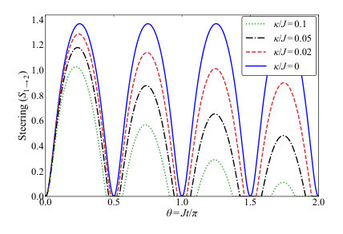
<figcaption class="paper-figure-caption"><b>Fig 5.</b> FIG. 5. Effect of optical loss with squeezed input states is plotted against dimensionless interaction time, with squeezing factor r = 0.8. In each case, the solid blue, dashed-red, dot- dashed black, and dotted-green lines correspond to κ/J = 0, 0.02, 0.05, and 0.1, respectively.</figcaption>
</figure>
</div>

<p><strong>Summary.</strong> This paper analyzes how quantum steering, a key correlation measure, evolves in coupled optical waveguides that experience realistic photon loss. Using the covariance matrix formalism, the authors demonstrate that while loss degrades the correlation, the directional asymmetry of the steering can be precisely controlled by engineering the nonclassical nature of the input light. This offers a promising platform for building practical, one-way quantum information devices.</p>
<p><strong>Why it may be interesting.</strong> This work bridges fundamental quantum correlation measures (steering) with practical, lossy physical platforms (integrated photonics), providing concrete design rules for quantum communication protocols.</p>
<details>
<summary>Detailed structure</summary>
<p><strong>Main problem.</strong> The study investigates the time-dependent dynamics and controllability of Gaussian quantum steering in coupled optical waveguides under realistic loss conditions.</p>
<p><strong>Main result.</strong> The research shows that while optical loss suppresses steering, a significant amount can persist, and crucially, the directional asymmetry of the steering can be actively controlled by engineering the nonclassicality of the input states.</p>
<p><strong>Method.</strong> The analysis employs the covariance matrix formalism to track the time evolution of Gaussian states, incorporating dissipation via the Lindblad master equation.</p>
<p><strong>Model / system.</strong> The system is modeled using two identical, coupled, lossy optical waveguides, whose dynamics are governed by a Hamiltonian describing coupling ($J$) and an explicit loss term ($\kappa$).</p>
<p><strong>Key observables.</strong> Gaussian quantum steering measures ($S_{1	o 2}$ and $S_{2	o 1}$), directional asymmetry ($\Delta S$), purity, and nonclassicality.</p>
<p><strong>Important parameters / regimes.</strong> Optical loss rate ($\kappa$), coupling strength ($J$), input nonclassicality ($  au$), and squeezing ($r$).</p>
<p><strong>Assumptions / limitations.</strong> The system is assumed to remain within the Gaussian state framework, and the waveguides are assumed to be identical.</p>
<p><strong>Figures summary.</strong> Figures illustrate the evolution of Gaussian quantum steering for both symmetric (equal input nonclassicalities) and asymmetric (unequal input nonclassicalities) input states, demonstrating controllable directionality.</p>
<p><strong>Paper structure.</strong> The paper systematically introduces the physical model, derives the time evolution equations using the covariance matrix, and then analyzes the dependence of steering on loss, nonclassicality, and the resulting directional asymmetry.</p>
</details>
<details>
<summary>Abstract</summary>
<p>Quantum steering is an important type of quantum correlation with potential applications in one-sided device-independent (1SDI) quantum information protocols. In this contribution, we explore the time-dependent dynamics of Gaussian quantum steering in coupled lossy optical waveguides using the covariance matrix formalism. Optical dissipation is explicitly incorporated to account for realistic propagation losses in coupled waveguides. We systematically investigate the influence of the optical loss rate, purity, nonclassicality, and squeezing of the input Gaussian states on the generation and evolution of steering. The results demonstrate that increasing nonclassicality and squeezing enhances Gaussian steering, while optical loss and reduced purity progressively suppress it. However, a considerable amount of steering can persist over finite propagation intervals in the presence of optical loss. We further examine that steering is symmetric for input states with identical nonclassicality, while unequal nonclassicalities lead to directional steering asymmetry, offering a way to control the steering direction through input-state engineering. These results demonstrate that coupled optical waveguides can support controllable Gaussian quantum steering under practical loss conditions and offer a promising integrated-photonic platform for asymmetric quantum-information protocols, including 1SDI quantum key distribution (QKD) and quantum communication.</p>
</details>
<p><sub><a href="#top">↑ back to top</a></sub></p>

<p><a id="paper-2609.23171"></a></p>
<h3 id="deterministic-synthesis-and-processing-of-frequency-bin-qubits-in-a-macroscopically-coherent-quantum-memory"><a href="http://arxiv.org/abs/2609.23171v1">Deterministic synthesis and processing of frequency-bin qubits in a macroscopically coherent quantum memory</a></h3>
<p><strong>Authors:</strong> S. A. Moiseev<br>
<strong>Type:</strong> theory · <strong>Category:</strong> quantum information and computing · <strong>PDF:</strong> <a href="https://arxiv.org/pdf/2609.23171v1">https://arxiv.org/pdf/2609.23171v1</a><br>
<strong>Analysis basis:</strong> full PDF text, analyzed in chunks
<strong>Topic relevance:</strong> <code>Tavis-Cummings &amp; cavity-many-emitter</code> <strong>3/5</strong> · <code>interference shaping light</code> <strong>3/5</strong> · <code>Keldysh / 2PI / non-Gaussian methods</code> <strong>2/5</strong> · <code>analog quantum simulation</code> <strong>2/5</strong> · <code>driven-dissipative phase transition</code> <strong>2/5</strong> · <code>methods for driven-dissipative</code> <strong>2/5</strong> · <code>correlated / nonlocal dissipation</code> <strong>1/5</strong> · <code>quantum measurements</code> <strong>1/5</strong></p>
<div class="figure-strip-hint">↔ Scroll figures horizontally</div>
<div class="paper-figures-scroll">
<figure class="paper-figure-card">
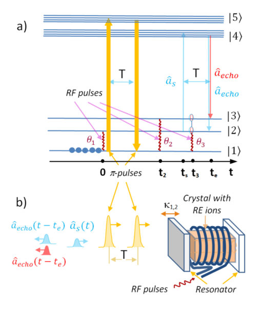
<figcaption class="paper-figure-caption"><b>Fig 1.</b> FIG. 1. a) Atomic energy levels of the REIs and timing sequence of control two π-laser pulses and three RF pulses with pulse areas θ1, θ2, θ3; arrival times of the incoming sig- nal pulse ˆas and the emitted frequency-bin echo ˆaechoes. b) Simplified experimental schematic: a REIs-doped crystal is placed inside a dual-mode optical resonator; REIs are excited by two π-laser pulses and a signal pulse ˆas coupled through the cavity; the emitted frequency-bin echo ˆaechoes follows; co- herent spin rotation is induced by an inductively coupled RF pulses.</figcaption>
</figure>
</div>

<p><strong>Summary.</strong> This work details a protocol to transform quantum memory in REI-doped crystals into an active quantum processor for photonic qubits. By leveraging spin PLM coherence, the authors show how to deterministically synthesize frequency-bin qubits using cavity-assisted techniques. This establishes a unified platform for both quantum storage and advanced optical signal processing.</p>
<p><strong>Why it may be interesting.</strong> It provides a detailed theoretical blueprint for using solid-state quantum memories not just for storage, but as an active processor for complex photonic quantum states, which is a major goal in quantum networking.</p>
<details>
<summary>Detailed structure</summary>
<p><strong>Main problem.</strong> The paper aims to advance quantum memory from a passive storage device to an active platform capable of deterministically processing photonic states, specifically frequency-bin qubits.</p>
<p><strong>Main result.</strong> The use of spin Pre-created Long-lived Macroscopic (PLM) coherence enables all-optical control and the deterministic synthesis of frequency-bin qubits via spectrally nonlocal impedance matching.</p>
<p><strong>Method.</strong> The analysis employs the input-output formalism and solves coupled differential equations derived from the system Hamiltonian, analyzing the resulting echo fields in the frequency domain.</p>
<p><strong>Model / system.</strong> The system is a cavity-assisted quantum memory utilizing Rare-Earth Ion (REI) doped crystals, where the dynamics are governed by the interaction between cavity modes and multiple spin coherences.</p>
<p><strong>Key observables.</strong> Output echo fields ($  ilde{a}_{2,3;out}(\omega)$) and the ability to synthesize frequency-bin photonic qubits.</p>
<p><strong>Important parameters / regimes.</strong> The generalized spectrally nonlocal impedance-matching condition ($\alpha_{22}\langle\hat{S}_{22}
angle/\kappa_2 + \alpha_{33}\langle\hat{S}_{33}
angle/\kappa_3 = 1/2$) and the spin PLM coherence ($\hat{S}_{23}$).</p>
<p><strong>Assumptions / limitations.</strong> The analysis assumes a narrow input bandwidth ($\delta\omega_s$) and neglects the effect of the weak signal pulse on the populations of the atomic states.</p>
<p><strong>Figures summary.</strong> Figures illustrate the atomic energy levels, the timing sequence of control pulses (RF and $\pi$-lasers), and the schematic setup involving the REI-doped crystal in a dual-mode resonator.</p>
<p><strong>Paper structure.</strong> The paper develops the theoretical framework by first defining the system dynamics using coupled equations, then solving these in the frequency domain using the input-output formalism, and finally deriving the conditions necessary for deterministic frequency-bin qubit synthesis.</p>
</details>
<details>
<summary>Abstract</summary>
<p>Quantum information processing requires efficient storage and manipulation of photonic states.Here, we advance a cavity-assisted quantum memory protocol based on Pre-created Long-lived Macroscopic (PLM) coherence, thereby transforming quantum memory from a passive storage device into a platform for deterministic in-memory photonic processing. It is demonstrated that spin PLM coherence enables all-optical control of quantum memory using robust radio-frequency rotations alone. Here, the spin coherence serves as a distributed coherent quantum bus, which mediates the deterministic synthesis and storage of frequency-bin states through spectrally nonlocal impedance matching. We identify an inherent time-reversal symmetry in the underlying dynamical equations, ensuring unitary evolution of the quantum memory operations. The presented results demonstrate a unified platform for quantum storage and optical signal processing, enabling controlled manipulation of frequency-bin photonic qubits and paving the way for scalable multimode quantum networks based on spectral-encoding architectures.</p>
</details>
<p><sub><a href="#top">↑ back to top</a></sub></p>

<p><a id="paper-2609.22915"></a></p>
<h3 id="interaction-renormalization-and-the-plasma-staircase"><a href="http://arxiv.org/abs/2609.22915v1">Interaction renormalization and the plasma staircase</a></h3>
<p><strong>Authors:</strong> Alexander V. Milovanov, Alexander Iomin, Jens Juul Rasmussen<br>
<strong>Type:</strong> theory · <strong>Category:</strong> disordered systems and neural networks · <strong>PDF:</strong> <a href="https://arxiv.org/pdf/2609.22915v1">https://arxiv.org/pdf/2609.22915v1</a><br>
<strong>Analysis basis:</strong> full PDF text, analyzed in chunks
<strong>Topic relevance:</strong> <code>Keldysh / 2PI / non-Gaussian methods</code> <strong>3/5</strong> · <code>driven-dissipative phase transition</code> <strong>3/5</strong> · <code>methods for driven-dissipative</code> <strong>3/5</strong> · <code>non-equilibrium universality</code> <strong>3/5</strong> · <code>Frenkel-Kontorova</code> <strong>1/5</strong> · <code>analog quantum simulation</code> <strong>1/5</strong> · <code>correlated / nonlocal dissipation</code> <strong>1/5</strong></p>
<div class="figure-strip-hint">↔ Scroll figures horizontally</div>
<div class="paper-figures-scroll">
<figure class="paper-figure-card">
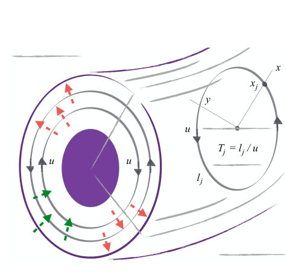
<figcaption class="paper-figure-caption"><b>Fig 1.</b> FIG. 1: The NLSE model. Elliptic contours (gray color) rep- resent staircase jets circling around the magnetic flux surfaces. Each such contour is thought of as a nonlinear oscillator char- acterized by the radial position xj, wave number nj = 2π/lj, and rotation period Tj = lj/u, where u is the E × B velocity. Dashed arrows represent respectively avalanches (red color) and voids (green color). Gray arrows indicate the direction of the E × B drift. The tokamak core is depicted as a central oval (violet color).</figcaption>
</figure>
</div>

<p><strong>Summary.</strong> This theoretical work investigates the stability of plasma structures called E x B staircases in fusion reactors by merging the Hasegawa-Wakatani model with quantum field theory concepts like interaction renormalization. The study establishes a precise critical threshold ($\delta_c = \pi$) determining whether these barriers are stable or prone to radial expansion, suggesting a fundamental physical condition for plasma confinement.</p>
<p><strong>Why it may be interesting.</strong> The application of concepts like interaction renormalization and subquadratic nonlinearity, typically seen in quantum field theory or disordered systems, to a classical plasma problem provides a rich analogy for understanding non-equilibrium critical phenomena.</p>
<details>
<summary>Detailed structure</summary>
<p><strong>Main problem.</strong> The paper addresses the dynamical and structural stability of E x B staircases in magnetically confined fusion plasma.</p>
<p><strong>Main result.</strong> The plasma staircase is stable only when the nonadiabaticity parameter exceeds a critical value, $\delta_c = \pi$. Below this threshold, the system exhibits instability characterized by a specific growth rate of its radial second moment.</p>
<p><strong>Method.</strong> The authors combine the Hasegawa-Wakatani model with interaction renormalization techniques borrowed from quantum field theory, leading to a mean-field description via the Schrödinger-Newton equation.</p>
<p><strong>Model / system.</strong> The system models plasma dynamics in a tokamak, governed by a Nonlinear Schrödinger Equation (NLSE) derived from the HW model. The nonlinearity is modified by an interaction renormalization constant, leading to a subquadratic nonlinearity.</p>
<p><strong>Key observables.</strong> The stability of the plasma staircase, the radial second moment growth rate ($\propto t^{2/3}$ for instability), and the critical nonadiabaticity parameter $\delta_c$.</p>
<p><strong>Important parameters / regimes.</strong> The nonadiabaticity parameter ($\delta$), the critical value ($\delta_c = \pi$), and the nonlinearity exponent ($s$).</p>
<p><strong>Assumptions / limitations.</strong> The analysis relies on mean-field approximations, the use of the HW model, and the incorporation of interaction renormalization from QFT.</p>
<p><strong>Figures summary.</strong> Figure 1 illustrates the NLSE model, showing elliptic contours representing staircase jets, dashed arrows indicating avalanches/voids, and the direction of E x B drift.</p>
<p><strong>Paper structure.</strong> The paper progresses from defining the physical problem (plasma stability) to introducing the theoretical framework (HW model + interaction renormalization) and culminates in deriving the stability criteria and the critical threshold $\delta_c$.</p>
</details>
<details>
<summary>Abstract</summary>
<p>We resolve an existing question concerning dynamical and structural stability of the E {\times} B staircases in magnetically confined fusion plasma. The problem has stirred considerable interest in the literature due to a unique combination of its scientific and practical aspects. Here, we report a new approach to the problem by combining the paradigmatic Hasegawa-Wakatani model of electrostatic drift-wave turbulence with an idea of interaction renormalization, imported from quantum field theory. It is shown based on the Schrödinger-Newton equation with renormalized interaction constant that the plasma staircase is robust and stable as soon as the nonadiabaticity parameter, δ, goes above a certain critical value, and is unstable otherwise. This critical value is an exact result of the interaction model and is found to be δc = π. For δ &lt; δc , the unstable system expands in the radial direction, resulting in a radial second moment that grows with time t as t^(2/3). The results obtained bear important implications with regard to the implementation of arrays of semipermeable transport barriers in tokamaks, suggesting a threshold condition for their generation.</p>
</details>
<p><sub><a href="#top">↑ back to top</a></sub></p>

<p><a id="paper-2609.24953"></a></p>
<h3 id="tight-entropy-contraction-beyond-detailed-balance"><a href="http://arxiv.org/abs/2609.24953v1">Tight entropy contraction beyond detailed balance</a></h3>
<p><strong>Authors:</strong> Li Gao, Jingyu Guo<br>
<strong>Type:</strong> theory · <strong>Category:</strong> statistical mechanics · <strong>PDF:</strong> <a href="https://arxiv.org/pdf/2609.24953v1">https://arxiv.org/pdf/2609.24953v1</a><br>
<strong>Analysis basis:</strong> full PDF text, analyzed in chunks
<strong>Topic relevance:</strong> <code>correlated / nonlocal dissipation</code> <strong>3/5</strong> · <code>driven-dissipative phase transition</code> <strong>3/5</strong> · <code>Keldysh / 2PI / non-Gaussian methods</code> <strong>2/5</strong> · <code>methods for driven-dissipative</code> <strong>2/5</strong> · <code>non-equilibrium universality</code> <strong>2/5</strong> · <code>analog quantum simulation</code> <strong>1/5</strong> · <code>quantum measurements</code> <strong>1/5</strong> · <code>scars &amp; prethermalization</code> <strong>1/5</strong></p>
<div class="figure-strip-hint">↔ Scroll figures horizontally</div>
<div class="paper-figures-scroll">
<figure class="paper-figure-card">
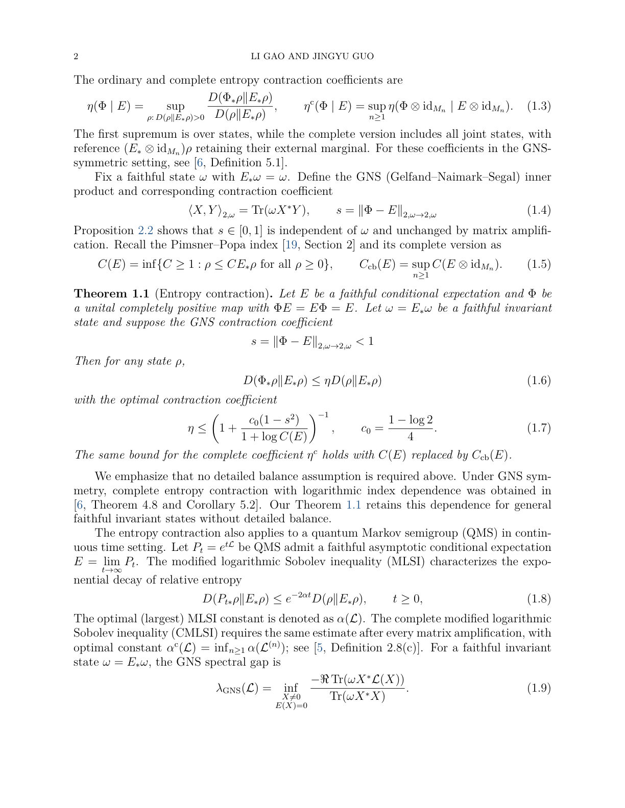
<figcaption class="paper-figure-caption"><b>Fig 1.</b> Low-resolution page preview, page 2</figcaption>
</figure>
<figure class="paper-figure-card">
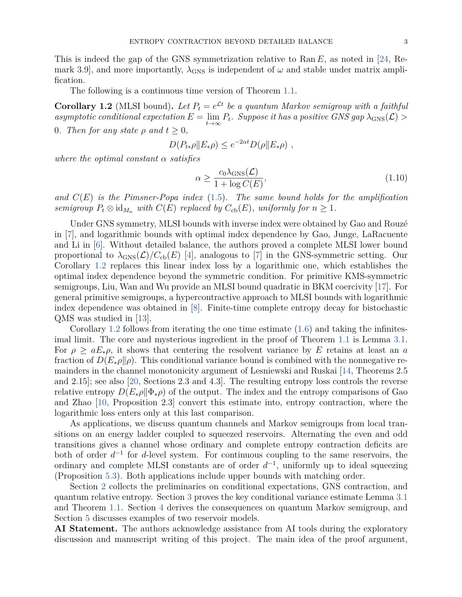
<figcaption class="paper-figure-caption"><b>Fig 2.</b> Low-resolution page preview, page 3</figcaption>
</figure>
<figure class="paper-figure-card">
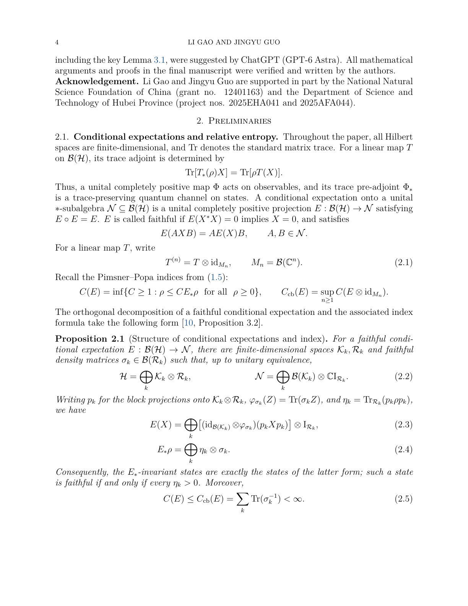
<figcaption class="paper-figure-caption"><b>Fig 3.</b> Low-resolution page preview, page 4</figcaption>
</figure>
<figure class="paper-figure-card">
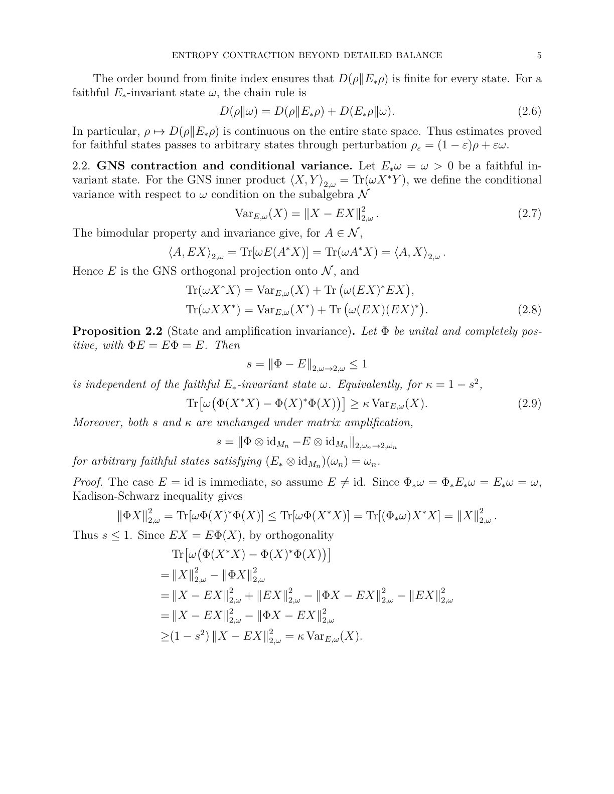
<figcaption class="paper-figure-caption"><b>Fig 4.</b> Low-resolution page preview, page 5</figcaption>
</figure>
<figure class="paper-figure-card">
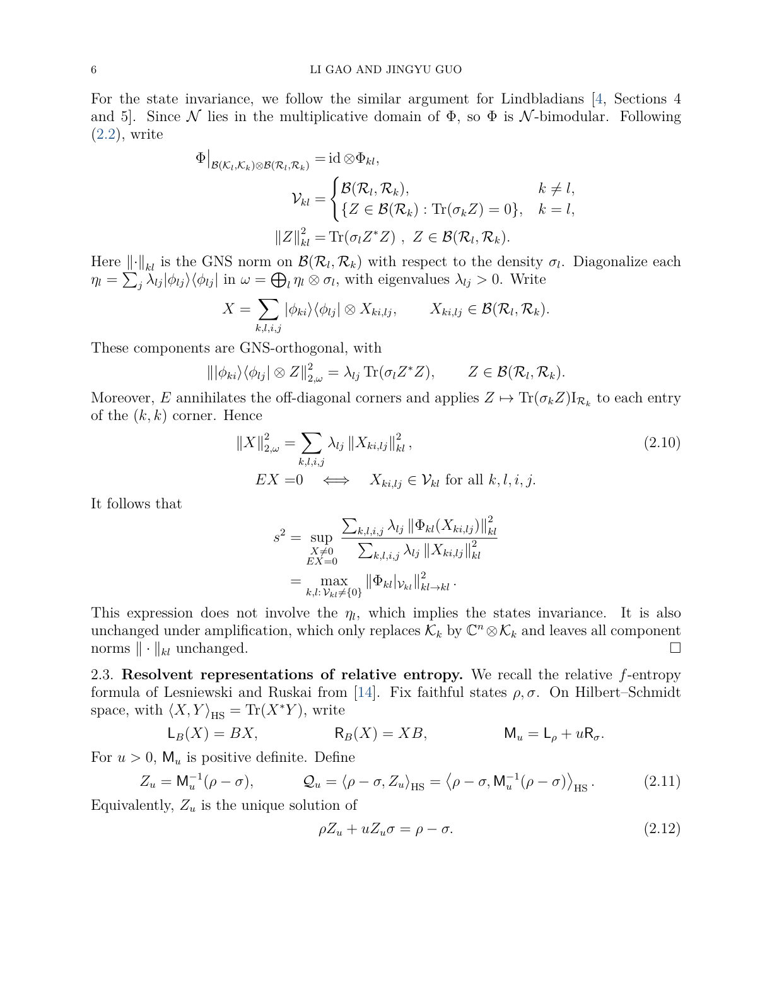
<figcaption class="paper-figure-caption"><b>Fig 5.</b> Low-resolution page preview, page 6</figcaption>
</figure>
</div>

<p><strong>Summary.</strong> This paper develops new quantitative bounds for how quantum entropy contracts in open quantum systems, even when the system dynamics do not satisfy the detailed balance condition. By utilizing advanced tools from operator algebras, the authors establish relationships between relative entropy and spectral gaps for quantum channels. This is significant for understanding the fundamental rates of thermalization and relaxation in complex quantum matter models.</p>
<p><strong>Why it may be interesting.</strong> This work provides rigorous, quantitative bounds on the rate of information dissipation (entropy contraction) in open quantum systems, which is fundamental for understanding thermalization and relaxation dynamics in complex quantum systems.</p>
<details>
<summary>Detailed structure</summary>
<p><strong>Main problem.</strong> The paper aims to establish quantitative entropy contraction bounds for general finite-dimensional quantum channels and quantum Markov semigroups, extending results beyond the restrictive condition of detailed balance.</p>
<p><strong>Main result.</strong> It derives entropy contraction bounds that retain optimal logarithmic dependence on the system size, even when detailed balance is not assumed, providing lower bounds on the modified logarithmic Sobolev constant.</p>
<p><strong>Method.</strong> The analysis employs advanced tools from operator algebras, including GNS inner products, conditional expectations, and spectral gap analysis, to relate relative entropy contraction to spectral properties.</p>
<p><strong>Model / system.</strong> The study considers general finite-dimensional quantum channels ($\Phi$) and quantum Markov semigroups ($P_t$), applying the framework to specific physical models like energy ladders coupled to reservoirs.</p>
<p><strong>Key observables.</strong> Relative entropy ($D(
ho\|\sigma)$), GNS contraction coefficient ($s$), MLSI constants ($\alpha, \alpha_c$), and the spectral gap ($\lambda_{GNS}(L)$).</p>
<p><strong>Important parameters / regimes.</strong> The bounds are shown to be independent of the external environment's system size, and the results are applicable to specific coupling strengths ($eta$) and dimensions ($d$).</p>
<p><strong>Assumptions / limitations.</strong> The analysis requires the existence of a faithful conditional expectation ($E$) and a faithful invariant state ($\omega$), and is restricted to finite dimensions.</p>
<p><strong>Paper structure.</strong> The paper develops the argument by first establishing GNS contraction coefficients for discrete time channels, then extending these bounds to the continuous-time quantum Markov semigroup framework, and finally applying the results to specific physical coupling scenarios.</p>
</details>
<details>
<summary>Abstract</summary>
<p>We establish quantitative entropy contraction bounds for finite-dimensional quantum channels beyond detailed balance. For channels compatible with a faithful conditional expectation, we show that GNS (Gelfand--Naimark--Segal) norm contraction yields relative entropy contraction with only a logarithmic loss in the dimensional constant. For quantum Markov semigroups with a faithful asymptotic conditional expectation, this gives a lower bound on the complete modified logarithmic Sobolev constant in terms of the GNS spectral gap. The bounds allow initial entanglement with an external environment and are independent of its system size. Applications to alternating reservoir pulses and continuously coupled energy ladders give bounds with optimal size dependence.</p>
</details>
<p><sub><a href="#top">↑ back to top</a></sub></p>

<p><a id="paper-2609.24617"></a></p>
<h3 id="explicit-closed-form-propagators-for-time-dependent-gain-loss-master-equations"><a href="http://arxiv.org/abs/2609.24617v1">Explicit closed-form propagators for time-dependent gain-loss master equations</a></h3>
<p><strong>Authors:</strong> Léonce Dupays<br>
<strong>Type:</strong> theory · <strong>Category:</strong> other · <strong>PDF:</strong> <a href="https://arxiv.org/pdf/2609.24617v1">https://arxiv.org/pdf/2609.24617v1</a><br>
<strong>Analysis basis:</strong> full PDF text, analyzed in chunks
<strong>Topic relevance:</strong> <code>driven-dissipative phase transition</code> <strong>3/5</strong> · <code>methods for driven-dissipative</code> <strong>3/5</strong> · <code>Keldysh / 2PI / non-Gaussian methods</code> <strong>2/5</strong> · <code>non-equilibrium universality</code> <strong>2/5</strong> · <code>Tavis-Cummings &amp; cavity-many-emitter</code> <strong>1/5</strong> · <code>analog quantum simulation</code> <strong>1/5</strong> · <code>correlated / nonlocal dissipation</code> <strong>1/5</strong> · <code>quantum measurements</code> <strong>1/5</strong></p>
<div class="figure-strip-hint">↔ Scroll figures horizontally</div>
<div class="paper-figures-scroll">
<figure class="paper-figure-card">
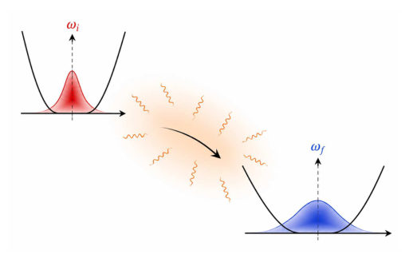
<figcaption class="paper-figure-caption"><b>Fig 1.</b> FIG. 1. Possible physical realization of the driven gain–loss dynamics. A particle is confined in a time- dependent harmonic potential and coupled to a thermal bath. The interplay between driving and dissipation leads to a gain– loss master equation with time-dependent rates [38]. We provide closed-form expressions for the chronological and an- tichronological propagators, which can be used to characterize the dynamics of an arbitrary initial state.</figcaption>
</figure>
<figure class="paper-figure-card">
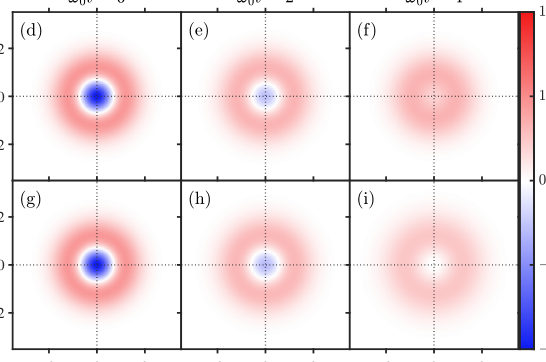
<figcaption class="paper-figure-caption"><b>Fig 2.</b> FIG. 2. Driven dissipative dynamics for expansion (ξ = −0.20, blue) and compression (ξ = +0.20, red) protocols and associated Wigner functions. The first row shows (a) the oscillator frequency ω(t)/ω0 given by Eq. (49), (b) the excitation and relaxation rates γ+(t)/ω0 and γ−(t)/ω0 given by Eq. (52), and (c) the instantaneous thermal occupation ¯nth(t) given by Eq. (53). In panel (b), solid and dashed lines denote γ+(t) and γ−(t), respectively. The second and third rows show the Wigner function of the initial Fock state ∣n = 1⟩at ω0t = 0, 2, and 4 for the compression and expansion protocols, respectively. Red and blue regions indicate positive and negative Wigner values. We use the...</figcaption>
</figure>
<figure class="paper-figure-card">
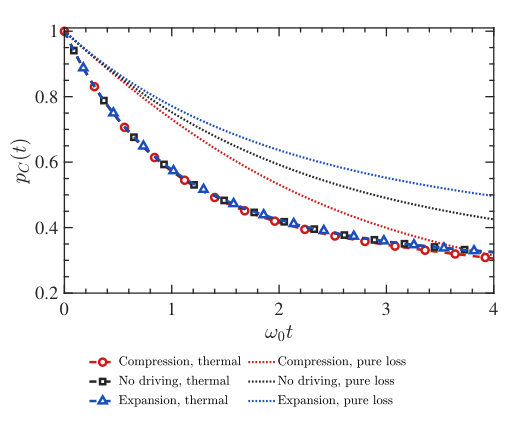
<figcaption class="paper-figure-caption"><b>Fig 3.</b> FIG. 3. Code-space survival probability pC(t) for the binomial bosonic code under compression (ξ = +0.20), no driving (ξ = 0), and expansion (ξ = −0.20). Dashed curves with markers show the finite-temperature gain–loss dy- namics, while dotted curves show the corresponding pure–loss limits. Circles, squares, and triangles distinguish the compres- sion, undriven, and expansion protocols, respectively. We use the same parameters as in Fig. 2.</figcaption>
</figure>
</div>

<p><strong>Summary.</strong> This paper develops a novel method to find exact, closed-form solutions for propagators in time-dependent master equations describing open quantum systems. By exploiting specific algebraic structures related to gain-loss dynamics, the authors derive an exact dynamical map. This is highly valuable for modeling driven quantum oscillators and quantum information processing in noisy environments.</p>
<p><strong>Why it may be interesting.</strong> This work provides powerful, non-trivial analytical tools for open quantum systems, especially those encountered in quantum optics and cavity QED, where time-dependent driving and dissipation are common.</p>
<details>
<summary>Detailed structure</summary>
<p><strong>Main problem.</strong> The paper addresses the central challenge of deriving explicit closed-form propagators for open quantum systems governed by time-dependent master equations, specifically those involving gain and loss.</p>
<p><strong>Main result.</strong> The authors derive explicit, closed-form factorizations for the chronological and antichronological propagators, providing an exact dynamical map for arbitrary time-dependent gain and loss rates.</p>
<p><strong>Method.</strong> The derivation utilizes algebraic properties of the system generators (related to $\mathfrak{su}(1,1)$ algebra) to find factorizations, bypassing the need to solve coupled, nonlinear differential equations.</p>
<p><strong>Model / system.</strong> The system models bosonic gain-loss dynamics, which is a canonical description of a driven harmonic oscillator coupled to a thermal bath. The dynamics are governed by a time-dependent Lindblad master equation.</p>
<p><strong>Key observables.</strong> Wigner function evolution of an initial Fock state, and the code-space survival probability of a binomial bosonic code.</p>
<p><strong>Important parameters / regimes.</strong> Time-dependent gain and loss rates ($\alpha(t), eta(t)$ or $\gamma_\pm(t)$).</p>
<p><strong>Assumptions / limitations.</strong> The derivation relies on specific algebraic conditions on the system generators ($[A,[A,B]] = \lambda_{A}[A,B]$ and $[B,[A,B]] = \lambda_{B}[A,B]$).</p>
<p><strong>Figures summary.</strong> Figure 1 illustrates the physical setup: a particle in a time-dependent harmonic potential coupled to a thermal bath, leading to the gain-loss master equation.</p>
<p><strong>Paper structure.</strong> The paper first establishes the general algebraic framework for propagator factorization. It then applies this to the bosonic gain-loss dissipators, deriving the exact dynamical map. Finally, it benchmarks the result by calculating the time evolution of the Wigner function and the survival probability of a bosonic code.</p>
</details>
<details>
<summary>Abstract</summary>
<p>Time ordering is a central obstacle in driven open-system dynamics governed by master equations with time-dependent rates. We derive explicit closed-form factorizations of the chronological and antichronological propagators for a time-dependent generator of the form $\mathcal{L}(t)=α(t)A+β(t)B$, when the commutator $[A,B]$ is a simultaneous eigenoperator of the adjoint actions of $A$ and $B$, namely $[A,[A,B]]=λ_{A}[A,B]$ and $[B,[A,B]]=λ_{B}[A,B]$. In contrast to the disentangling procedure known as the Wei-Norman decomposition, our construction determines the factorization coefficients directly, without solving a coupled system of nonlinear differential equations. Applying this result to the bosonic gain-loss Lindblad equation, we obtain the exact dynamical map for arbitrary time-dependent gain and loss rates. The gain-loss master equation provides a canonical description of a driven harmonic oscillator coupled to a thermal bath. We benchmark the construction by deriving the time evolution of the Wigner function of an initial Fock state and comparing it with independent phase-space results. We further apply the resulting dynamical map to evaluate the code-space survival probability of a binomial bosonic code under driven gain-loss dynamics.</p>
</details>
<p><sub><a href="#top">↑ back to top</a></sub></p>

<p><a id="paper-2609.23382"></a></p>
<h3 id="unified-spectral-dynamical-and-correlation-signatures-of-an-exceptional-point-in-cavity-optomechanics"><a href="http://arxiv.org/abs/2609.23382v1">Unified Spectral, Dynamical, and Correlation Signatures of an Exceptional Point in Cavity Optomechanics</a></h3>
<p><strong>Authors:</strong> Khazali Fahmi, Ahmad R. T. Nugraha, Ferry A. A. Nugraha, Adam B. Cahaya<br>
<strong>Type:</strong> both · <strong>Category:</strong> other · <strong>PDF:</strong> <a href="https://arxiv.org/pdf/2609.23382v1">https://arxiv.org/pdf/2609.23382v1</a><br>
<strong>Analysis basis:</strong> full PDF text, analyzed in chunks
<strong>Topic relevance:</strong> <code>driven-dissipative phase transition</code> <strong>3/5</strong> · <code>methods for driven-dissipative</code> <strong>3/5</strong> · <code>Keldysh / 2PI / non-Gaussian methods</code> <strong>2/5</strong> · <code>non-equilibrium universality</code> <strong>2/5</strong> · <code>analog quantum simulation</code> <strong>1/5</strong> · <code>correlated / nonlocal dissipation</code> <strong>1/5</strong> · <code>quantum measurements</code> <strong>1/5</strong> · <code>quantum optics experiment</code> <strong>1/5</strong></p>
<div class="figure-strip-hint">↔ Scroll figures horizontally</div>
<div class="paper-figures-scroll">
<figure class="paper-figure-card">
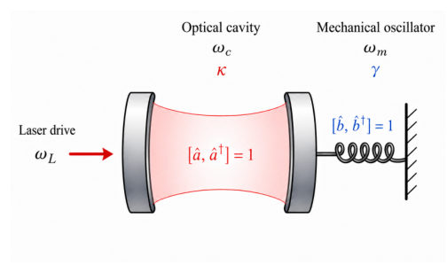
<figcaption class="paper-figure-caption"><b>Fig 1.</b> FIG. 1. Schematic of the Fabry-P´erot cavity optomechanical system. An optical cavity with resonance frequency 𝜔𝑐and decay rate 𝜅is driven by a laser at frequency 𝜔𝐿and coupled, with strength 𝑔, to a mechanical oscillator of frequency 𝜔𝑚and damping rate 𝛾.</figcaption>
</figure>
<figure class="paper-figure-card">
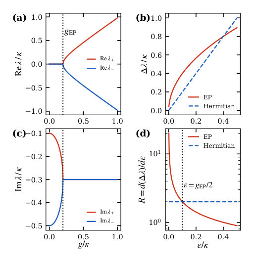
<figcaption class="paper-figure-caption"><b>Fig 2.</b> FIG. 2. (a) Real and (c) imaginary parts of the eigenvalues 𝜆± of ˆ𝐻eff as a function of the coupling strength 𝑔for the resonant condition Δ = 𝜔𝑚. The dotted vertical line marks the exceptional point 𝑔EP = |𝜅−𝛾|/4. Below the EP the imaginary parts split while the real parts remain degenerate and above the EP the roles are exchanged. Parameters used are 𝛾= 0.2𝜅and the common resonant frequency 𝜔= Δ = 𝜔𝑚is taken as the zero-frequency reference. (b) Eigenvalue splitting versus perturbation 𝜖. The EP follows the square-root law √︁</figcaption>
</figure>
<figure class="paper-figure-card">
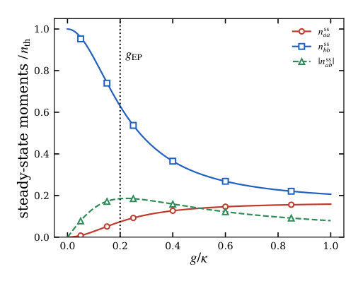
<figcaption class="paper-figure-caption"><b>Fig 3.</b> FIG. 3. Steady-state photon population 𝑛ss 𝑎𝑎, phonon population 𝑛ss 𝑏𝑏, and intermode coherence |𝑛ss 𝑎𝑏| (all in units of 𝑛th) versus coupling strength 𝑔at resonance (𝛿= 0). Solid curves are the analytic results, Eqs. (19)–(21). Open symbols are the numerical steady state of the master equation. The dotted line marks 𝑔EP. Parameters selected are as those in Fig. 2.</figcaption>
</figure>
<figure class="paper-figure-card">
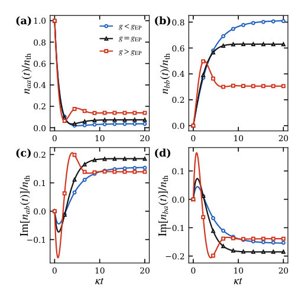
<figcaption class="paper-figure-caption"><b>Fig 4.</b> FIG. 4. Transient dynamics of the second-order moments in the three dynamical regimes. Panels (a) and (b) show the photon population 𝑛𝑎𝑎(𝑡) and phonon population 𝑛𝑏𝑏(𝑡), respectively, while panels (c) and (d) show the imaginary parts of the intermode coherences 𝑛𝑎𝑏(𝑡) and 𝑛𝑏𝑎(𝑡), respectively. The three regimes correspond to 𝑔&lt; 𝑔EP (blue), 𝑔= 𝑔EP (black), and 𝑔&gt; 𝑔EP (red), with 𝑔= 0.12𝜅, 𝑔= 𝑔EP = 0.2𝜅, and 𝑔= 0.5𝜅, respectively. The fluctuation modes are initially prepared in the state |1, 0⟩, corresponding to one optical excitation and the mechanical ground state. Solid curves denote the analytical solutions of Eqs. (34) and (37), while open symbols show the corresponding numerical results...</figcaption>
</figure>
<figure class="paper-figure-card">
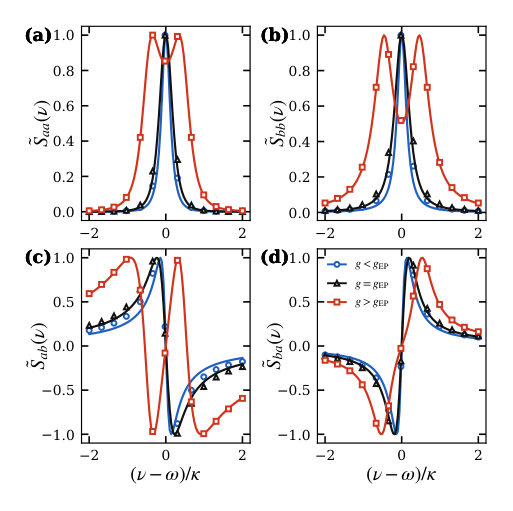
<figcaption class="paper-figure-caption"><b>Fig 5.</b> FIG. 6. Normalized spectral responses corresponding to the first- order correlation functions in the three dynamical regimes. Panels (a) and (b) show the normalized optical and mechanical spectra, e𝑆𝑎𝑎(𝜈) and e𝑆𝑏𝑏(𝜈), respectively, while panels (c) and (d) show the normalized real cross-spectral responses, e𝑆𝑎𝑏(𝜈) and e𝑆𝑏𝑎(𝜈). Below the EP the two spectral poles share a common resonance frequency but have different decay rates. At the EP they coalesce into a second- order pole, whereas above the EP they split in resonance frequency while sharing the same decay rate. Each curve is independently normalized by its maximum absolute value. Solid curves represent the analytical results, while...</figcaption>
</figure>
</div>

<p><strong>Summary.</strong> This paper thoroughly examines the signatures of an exceptional point in a dissipative cavity optomechanical system. It demonstrates that the EP structure governs not only the system's eigenvalues but also the time evolution of photon/phonon populations and intensity correlations. The findings connect non-Hermitian mode coalescence directly to measurable quantum signatures in cavity optomechanics.</p>
<p><strong>Why it may be interesting.</strong> This work provides a comprehensive mapping of non-Hermitian physics (EPs) onto measurable, time-domain quantum observables (correlations, dynamics) in a highly relevant platform like cavity optomechanics.</p>
<details>
<summary>Detailed structure</summary>
<p><strong>Main problem.</strong> The paper investigates how the exceptional-point (EP) structure of a dissipative cavity optomechanical system manifests across various measurable quantum observables.</p>
<p><strong>Main result.</strong> The EP causes a characteristic square-root dependence in eigenvalue splitting and dictates distinct dynamical regimes: non-oscillatory decay below the EP, polynomial-exponential decay at the EP, and damped oscillations above it.</p>
<p><strong>Method.</strong> The analysis combines theoretical modeling using the Lindblad master equation with the calculation of first- and second-order correlation functions and spectral responses.</p>
<p><strong>Model / system.</strong> The system is a dissipative cavity optomechanical setup involving an optical cavity coupled to a mechanical oscillator, modeled using an effective non-Hermitian Hamiltonian.</p>
<p><strong>Key observables.</strong> Transient photon/phonon populations, first-order coherence, spectral poles, and second-order intensity correlations (g2).</p>
<p><strong>Important parameters / regimes.</strong> The coupling strength ($g$) relative to the critical EP coupling ($g_{	ext{EP}}$), and the detunings ($\Delta, \omega_m$).</p>
<p><strong>Assumptions / limitations.</strong> The analysis relies on the quantum regression theorem and Gaussian moment factorization to relate higher-order correlations to lower-order dynamics.</p>
<p><strong>Figures summary.</strong> Figures illustrate the eigenvalue splitting ($\Delta\lambda \propto \sqrt{\epsilon}$) across different coupling regimes and show the evolution of second-order correlation functions across the EP boundary.</p>
<p><strong>Paper structure.</strong> The paper systematically analyzes the system dynamics by first establishing the effective Hamiltonian, then examining the spectral signatures (eigenvalue splitting), and finally extending the analysis to time-domain observables like populations and correlations across the EP.</p>
</details>
<details>
<summary>Abstract</summary>
<p>We investigate how the exceptional-point structure of a dissipative cavity optomechanical system is inherited by experimentally accessible dynamical, spectral, and quantum-statistical observables. At optical-mechanical resonance, the effective non-Hermitian first-moment dynamics exhibits a second-order exceptional point, where two eigenvalues and their eigenvectors coalesce and the eigenvalue splitting follows the characteristic square-root dependence on perturbations. We show that the same square-root feature also governs transient photon and phonon populations, first-order coherence, spectral poles, and second-order intensity correlations. Below the exceptional point, the dynamics is non-oscillatory, whereas above it damped oscillations emerge together with frequency splitting of the spectral poles. At the exceptional point, the Jordan-block structure produces polynomial-exponential relaxation and a second-order spectral pole. Using the quantum regression theorem and Gaussian moment factorization, we further show that the stationary fluctuations satisfy the Siegert relation linking first- and second-order correlations. Although the zero-delay autocorrelations retain their thermal value, the finite-delay intensity correlations exhibit clear exceptional point signatures. This finding connects non-Hermitian mode coalescence with measurable dynamical and correlation observables in cavity optomechanics.</p>
</details>
<p><sub><a href="#top">↑ back to top</a></sub></p>

<p><a id="paper-2609.23993"></a></p>
<h3 id="a-majorana-formulation-of-time-dependent-two-particle-reduced-density-matrix-dynamics"><a href="http://arxiv.org/abs/2609.23993v1">A Majorana Formulation of Time-Dependent Two-Particle Reduced-Density-Matrix Dynamics</a></h3>
<p><strong>Authors:</strong> Haoran Wang, Alessandro Principi<br>
<strong>Type:</strong> theory · <strong>Category:</strong> strongly correlated electrons · <strong>PDF:</strong> <a href="https://arxiv.org/pdf/2609.23993v1">https://arxiv.org/pdf/2609.23993v1</a><br>
<strong>Analysis basis:</strong> full PDF text, analyzed in chunks
<strong>Topic relevance:</strong> <code>Keldysh / 2PI / non-Gaussian methods</code> <strong>3/5</strong> · <code>analog quantum simulation</code> <strong>3/5</strong> · <code>methods for driven-dissipative</code> <strong>3/5</strong> · <code>non-equilibrium universality</code> <strong>3/5</strong> · <code>quantum measurements</code> <strong>1/5</strong></p>
<div class="figure-strip-hint">↔ Scroll figures horizontally</div>
<div class="paper-figures-scroll">
<figure class="paper-figure-card">
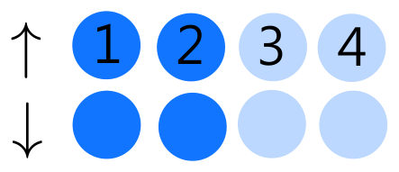
<figcaption class="paper-figure-caption"><b>Fig 1.</b> Figure 1. Setup of the four-site one-dimensional Hubbard model studied in Sec. III. Four electrons, two spin-up and two spin-down, are initially placed on sites 1 and 2 (dark blue). Sites 3 and 4 (light blue) are initially empty.</figcaption>
</figure>
<figure class="paper-figure-card">
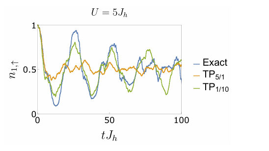
<figcaption class="paper-figure-caption"><b>Fig 2.</b> Figure 3. TP evolution for different projection rates and compared with the exact result. Here TP5/1 denotes five projections every time step, while TP1/10 denotes one pro- jection every ten time steps. TP5/1 converges quickly to the average value, whereas TP1/10 tracks the exact result for significantly longer times.</figcaption>
</figure>
<figure class="paper-figure-card">
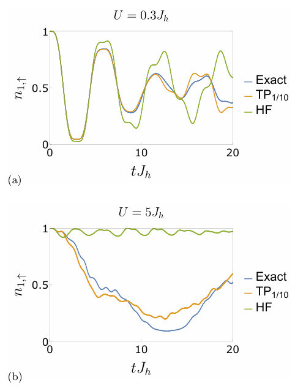
<figcaption class="paper-figure-caption"><b>Fig 3.</b> Figure 2. Time evolution of the expectation value of the occupation number ⟨ˆn1,↑⟩for the four-site Hubbard model following a quantum quench. Three algorithms are compared: exact diagonalization, TP1/10, and HF. Here TP1/10 denotes that one projection is performed every ten time steps. Panel (a) shows the weak-interaction case U = 0.3Jh. Panel (b) shows the strong-interaction case U = 5Jh.</figcaption>
</figure>
<figure class="paper-figure-card">
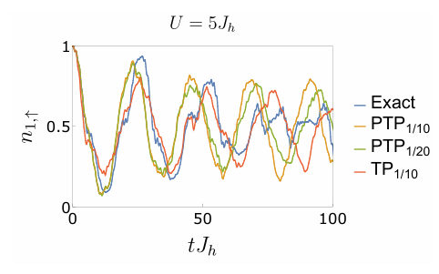
<figcaption class="paper-figure-caption"><b>Fig 4.</b> Figure 4. Impact of the perturbative correction on TP. PTP1/n uses one projection every n = 10, 20 time steps. TP1/10, as before, denotes TP with one projection every 10 time steps. Perturbative corrections improve the agree- ment with the exact result at early times, but produce too fast oscillations at later times.</figcaption>
</figure>
<figure class="paper-figure-card">
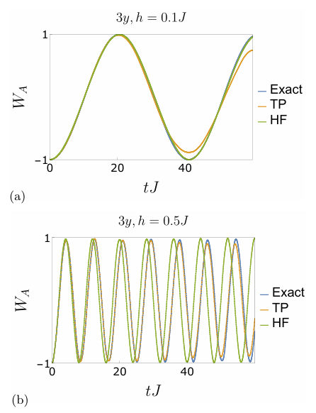
<figcaption class="paper-figure-caption"><b>Fig 5.</b> Figure 6. The time evolution of a four-plaquette Kitaev model following the sudden switch on of a magnetic field in the y direction applied to site 3 (3y quantum quench). See Fig. 5 for a definition of the lattice. In this case, the system oscillates between the AB and BC flux sectors. The dynamics obtained with the HF and TP algorithms is compared with the exact one. Here, TP is implemented with one projection every ten time steps. Panel (a) Time evolution of WA for a magnetic field h = 0.1J. TP gives near-exact agreement at times t ≲40, but shows signs of relaxation. The HF flux remains close to the exact result. Panel (b) At high field h = 0.5J, both TP and HF predict qualitatively...</figcaption>
</figure>
</div>

<p><strong>Summary.</strong> This work introduces a time-dependent two-particle reduced-density-matrix algorithm to simulate interacting Majorana fermions. By systematically closing the correlation hierarchy at the two-particle level, the method accurately captures strong-coupling effects in models like the Hubbard and Kitaev systems. While the projection procedure introduces irreversibility, it represents a significant theoretical step beyond mean-field theory for non-equilibrium quantum dynamics.</p>
<p><strong>Why it may be interesting.</strong> The development of a controlled, systematic method to go beyond mean-field theory for strongly correlated systems, while managing the complexity of higher-order correlations, is highly relevant for understanding non-equilibrium quantum dynamics in condensed matter.</p>
<details>
<summary>Detailed structure</summary>
<p><strong>Main problem.</strong> The paper addresses the challenge of simulating time-dependent dynamics in interacting fermionic systems by developing a two-particle reduced-density-matrix (aRDM) approach.</p>
<p><strong>Main result.</strong> The two-particle approach successfully captures strong-coupling dynamics in the Hubbard model and accurately reproduces early-time flux dynamics in the Kitaev model, significantly outperforming mean-field approximations.</p>
<p><strong>Method.</strong> The methodology involves solving the time-dependent BBGKY hierarchy truncated at the two-particle level, utilizing antisymmetrized reduced density matrices (aRDMs) and employing projective purification to enforce physical constraints.</p>
<p><strong>Model / system.</strong> The methods are benchmarked on two key models: quenches in the one-dimensional Hubbard model and flux dynamics in the Kitaev honeycomb model, both involving interacting Majorana fermions.</p>
<p><strong>Key observables.</strong> Time evolution of occupation numbers (e.g., $\langle \hat{n}_{1,\uparrow} 
angle$) and flux weights ($   ext{W}_A$).</p>
<p><strong>Important parameters / regimes.</strong> Interaction strength ($U/J_h$) and magnetic field strength ($h/J$).</p>
<p><strong>Assumptions / limitations.</strong> The primary approximations are truncating the correlation hierarchy at the two-particle level and using a projective purification step to maintain positivity, which introduces effective irreversibility.</p>
<p><strong>Figures summary.</strong> Figure 2 compares the time evolution of occupation numbers for the Hubbard model at weak and strong coupling, showing TP tracking exact results better than HF. Other figures compare flux dynamics across various approximations (TP, HF, etc.) in the Kitaev model.</p>
<p><strong>Paper structure.</strong> The paper introduces the TP algorithm for Majorana fermions, details the aRDM truncation and stabilization via projection, and then benchmarks this method on two distinct physical systems: the Hubbard quench and the Kitaev flux dynamics.</p>
</details>
<details>
<summary>Abstract</summary>
<p>We introduce a time-dependent two-particle (TP) reduced-density-matrix algorithm for systems of interacting Majorana fermions. We close the BBGKY hierarchy at the two-particle level by reconstructing the three-particle reduced density matrix from lower-order correlations. To stabilize the evolution, we impose a positivity projection on the two-particle density matrix while preserving chosen conserved quantities such as the energy. We benchmark the approach on quenches in the one-dimensional Hubbard model and on flux dynamics in the Kitaev honeycomb model. For the Hubbard quench, TP captures strong-coupling dynamics missed by Hartree--Fock (HF). For the Kitaev quenches, TP accurately reproduces the early-time flux dynamics in several regimes and provides a substantial improvement over HF when two-particle correlations are important. We further show that gauge coherence is essential for flux dynamics. The projection procedure however introduces an effective irreversibility, which affects the long-time dynamics.</p>
</details>
<p><sub><a href="#top">↑ back to top</a></sub></p>

<p><a id="paper-2609.22527"></a></p>
<h3 id="diffusion-with-stochastic-resetting-in-the-presence-of-a-delta-killing-trap-drift-controlled-survival-regimes"><a href="http://arxiv.org/abs/2609.22527v1">Diffusion with stochastic resetting in the presence of a delta killing trap: Drift-controlled survival regimes</a></h3>
<p><strong>Authors:</strong> Alain Mazzolo<br>
<strong>Type:</strong> theory · <strong>Category:</strong> statistical mechanics · <strong>PDF:</strong> <a href="https://arxiv.org/pdf/2609.22527v1">https://arxiv.org/pdf/2609.22527v1</a><br>
<strong>Analysis basis:</strong> full PDF text, analyzed in chunks
<strong>Topic relevance:</strong> <code>quantum measurements</code> <strong>3/5</strong> · <code>Keldysh / 2PI / non-Gaussian methods</code> <strong>2/5</strong> · <code>methods for driven-dissipative</code> <strong>2/5</strong> · <code>analog quantum simulation</code> <strong>1/5</strong> · <code>correlated / nonlocal dissipation</code> <strong>1/5</strong> · <code>driven-dissipative phase transition</code> <strong>1/5</strong> · <code>non-equilibrium universality</code> <strong>1/5</strong> · <code>scars &amp; prethermalization</code> <strong>1/5</strong></p>
<div class="figure-strip-hint">↔ Scroll figures horizontally</div>
<div class="paper-figures-scroll">
<figure class="paper-figure-card">
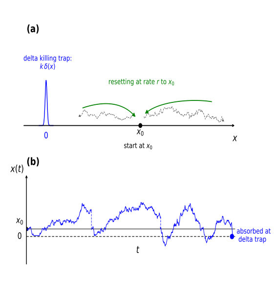
<figcaption class="paper-figure-caption"><b>Fig 1.</b> Figure 1. Illustration of Brownian motion with stochastic resetting in the presence of a localized delta killing trap. (a) A Brownian particle starts at x0 and diffuses freely on the real line. At random times, drawn from a Poisson process of rate r, the particle is instantaneously reset to its starting position x0. A fixed, partially absorbing trap of strength k, modeled by the delta killing potential kδ(x), is located at the origin. (b) A representative stochastic trajectory as a function of time. Vertical dashed lines indicate resetting events, and the trajectory ends when the particle is finally absorbed at the origin. Because the trap is only partially absorbing, the particle may cross...</figcaption>
</figure>
<figure class="paper-figure-card">
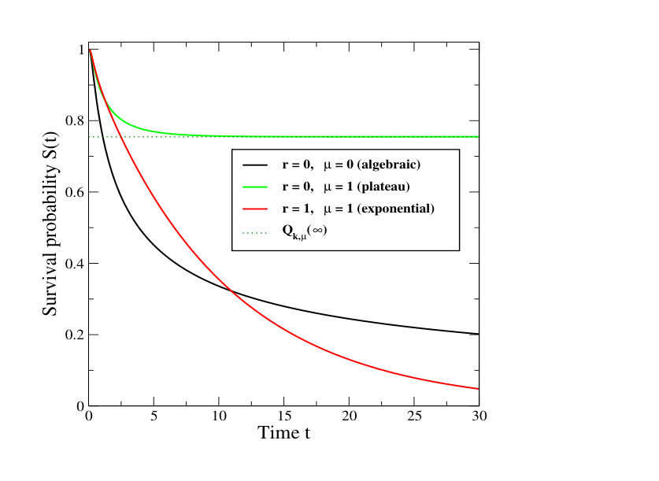
<figcaption class="paper-figure-caption"><b>Fig 2.</b> Figure 2. Representative survival curves for D = 1, k = 2, and x0 = 1. For r = 0 and µ = 0, the survival decays algebraically to zero. For r = 0 and µ = 1, it approaches the nonzero plateau Qk,µ(∞) of Eq. (122). For r = 1 and µ = 1, resetting removes the plateau and produces exponential decay. The horizontal dashed line is the exact reset-free plateau. The curves were obtained by numerical inversion of the exact Laplace transforms.</figcaption>
</figure>
<figure class="paper-figure-card">
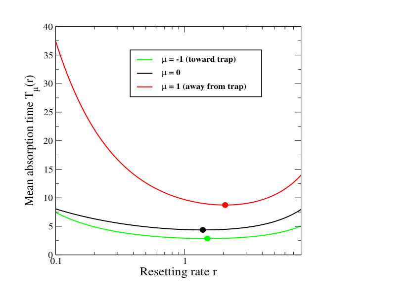
<figcaption class="paper-figure-caption"><b>Fig 3.</b> Figure 3. Mean absorption time Tµ(r) from Eq. (116) as a function of the resetting rate for D = 1, k = 2, x0 = 1, and three drift values. The circles mark the numerical minima. For these representative parameters, a drift away from the trap (µ = 1) increases the minimum mean time and shifts the optimum to a larger resetting rate than a drift toward the trap (µ = −1).</figcaption>
</figure>
<figure class="paper-figure-card">
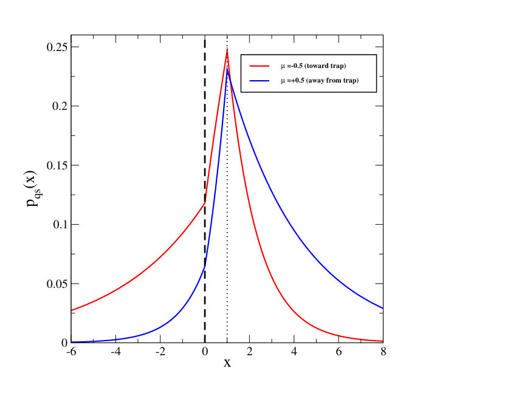
<figcaption class="paper-figure-caption"><b>Fig 4.</b> Figure 4. Exact quasi-stationary density pqs(x) from Eq. (148) for D = 1, x0 = 1, k = 1, and r = 0.3. The red curve corresponds to µ = −0.5 (drift toward the trap), while the blue curve corresponds to µ = +0.5 (drift away from the trap). The dashed vertical line marks the trap at x = 0, and the dotted vertical line marks the reset position x0 = 1. The two profiles are both normalized and clearly display the drift-induced asymmetry of the conditioned long-time state.</figcaption>
</figure>
</div>

<p><strong>Summary.</strong> This work provides a comprehensive theoretical analysis of a particle diffusing in 1D while simultaneously experiencing stochastic resetting and being subject to absorption by a localized trap. It establishes a unified picture showing how these competing processes dictate the long-time survival dynamics, ranging from algebraic to exponential decay. The results are valuable for understanding non-equilibrium steady states in systems with active control mechanisms like resetting.</p>
<p><strong>Why it may be interesting.</strong> The framework of stochastic resetting and absorption dynamics is highly relevant to open quantum systems, particularly those modeled by Lindblad master equations or continuous quantum measurement processes where environmental coupling leads to decay or trapping.</p>
<details>
<summary>Detailed structure</summary>
<p><strong>Main problem.</strong> The paper investigates the competition between stochastic resetting, drift-induced transience, and absorption by a localized killing trap in a 1D diffusive particle.</p>
<p><strong>Main result.</strong> The long-time survival probability exhibits distinct regimes: algebraic decay without resetting, a plateau with drift, and exponential decay when resetting is active. The decay rate is determined by the dominant pole of the Laplace transform.</p>
<p><strong>Method.</strong> The analysis relies on deriving exact Laplace-space expressions for the propagator and survival probability, followed by pole analysis to determine long-time asymptotics.</p>
<p><strong>Model / system.</strong> A one-dimensional Brownian particle undergoing diffusion (coefficient D) is subjected to stochastic resetting at rate r and a localized killing rate k at the origin.</p>
<p><strong>Key observables.</strong> Survival probability S(t), non-normalized propagator P(x, t|x_0), and the long-time decay rate $\theta$.</p>
<p><strong>Important parameters / regimes.</strong> Diffusion coefficient D, resetting rate r, killing strength k, and constant drift $\mu$.</p>
<p><strong>Assumptions / limitations.</strong> The analysis assumes a constant drift and models the trap using a delta-function killing rate. The long-time behavior is controlled by the dominant pole in the Laplace domain.</p>
<p><strong>Figures summary.</strong> Figure 1 illustrates the physical process involving free diffusion, resetting, and trapping. Figure 4 shows the explicit drift-induced asymmetry of the quasi-stationary profile.</p>
<p><strong>Paper structure.</strong> The paper systematically analyzes the system by deriving Laplace-space solutions for the propagator and survival probability, first in the driftless case, then incorporating drift, and finally focusing on the asymptotic behavior and optimization of the mean absorption time.</p>
</details>
<details>
<summary>Abstract</summary>
<p>We study a one-dimensional diffusive particle subject to stochastic resetting to its initial position, in the presence of an imperfect, localized target that can absorb (kill) the particle, modeled by a delta-function killing rate. The central question is how stochastic resetting competes with drift-induced transience and the target's finite reactivity. Exact Laplace-space expressions are derived for the non-normalized propagator and survival probability, for arbitrary diffusion coefficient $D$, resetting rate $r$, and killing strength $k$, first in the absence of drift and then under a constant drift. The long-time behavior separates into distinct regimes. Without resetting, unbiased diffusion exhibits the recurrent algebraic survival law $S(t)\sim t^{-1/2}$, whereas any nonzero drift renders the motion transient with respect to the target and leaves a nonzero ultimate survival probability. By contrast, any $r>0$ and $k>0$ repeatedly renews encounters with the target and restores eventual absorption, yielding an exponential survival law $S(t)\sim A e^{-θt}$. The decay rate $θ$ is given by the dominant (rightmost) pole of the Laplace transform, and the surviving density converges after normalization to an explicit quasi-stationary profile. The driftless and perfectly absorbing limits recover standard resetting results. These formulas provide a unified description of the crossover between recurrence-controlled, transience-controlled, and renewal-controlled survival.</p>
</details>
<p><sub><a href="#top">↑ back to top</a></sub></p>

<p><a id="paper-2609.22791"></a></p>
<h3 id="gaussian-quantum-reservoir-computing-with-a-hybrid-cavity-magnomechanical-system"><a href="http://arxiv.org/abs/2609.22791v1">Gaussian quantum reservoir computing with a hybrid cavity magnomechanical system</a></h3>
<p><strong>Authors:</strong> Hajar Assil, Khadija El Anouz, Abderrahim El Allati, Gian Luca Giorgi<br>
<strong>Type:</strong> theory · <strong>Category:</strong> other · <strong>PDF:</strong> <a href="https://arxiv.org/pdf/2609.22791v1">https://arxiv.org/pdf/2609.22791v1</a><br>
<strong>Analysis basis:</strong> full PDF text, analyzed in chunks
<strong>Topic relevance:</strong> <code>analog quantum simulation</code> <strong>3/5</strong> · <code>Keldysh / 2PI / non-Gaussian methods</code> <strong>2/5</strong> · <code>driven-dissipative phase transition</code> <strong>2/5</strong> · <code>methods for driven-dissipative</code> <strong>2/5</strong> · <code>Tavis-Cummings &amp; cavity-many-emitter</code> <strong>1/5</strong> · <code>correlated / nonlocal dissipation</code> <strong>1/5</strong> · <code>quantum measurements</code> <strong>1/5</strong></p>
<div class="figure-strip-hint">↔ Scroll figures horizontally</div>
<div class="paper-figures-scroll">
<figure class="paper-figure-card">
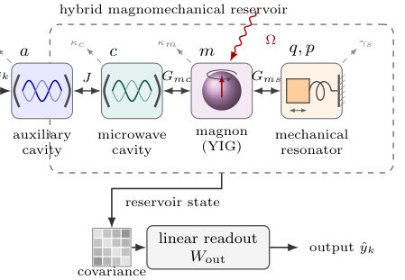
<figcaption class="paper-figure-caption"><b>Fig 1.</b> FIG. 1. Schematic of the cavity magnomechanical quantum reservoir. An input sequence sk is injected by modulating the detuning ∆(k) a of an auxiliary cavity a, which is coupled with strength J to the microwave cavity c of a hybrid mag- nomechanical system. The cavity exchanges excitations with the magnon mode m of a YIG sphere at rate Gmc, and the magnon couples to a mechanical resonator (q, p) through the magnetostrictive interaction, with effective coupling Gms; the magnon is coherently driven with Rabi frequency Ω, and the modes are damped at rates κa, κc, κm, and γs. After each input step, the covariance matrix Vk of the quadrature fluc- tuations provides the reservoir features, from...</figcaption>
</figure>
<figure class="paper-figure-card">
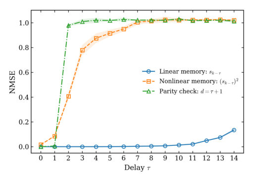
<figcaption class="paper-figure-caption"><b>Fig 2.</b> FIG. 2. Performance of the proposed extended hybrid cav- ity magnomechanical quantum reservoir on three benchmark tasks. The NMSE is shown as a function of the delay τ for the linear-memory task, yk = sk−τ (blue circles), and the nonlinear-memory task, yk = (sk−τ)2 (orange squares). For the parity-check task (green triangles), the parity order is rep- resented as d = τ + 1 to allow the three benchmarks to be displayed on a common horizontal axis.</figcaption>
</figure>
<figure class="paper-figure-card">

<figcaption class="paper-figure-caption"><b>Fig 3.</b> Fig. 2 compares the performance of the reservoir on the three benchmark tasks. A pronounced difference is observed between the linear-memory and nonlinear- processing tasks. For the linear-memory benchmark, the NMSE remains very small over a broad range of delays and increases appreciably only for the largest values of τ. This behavior indicates that information about past inputs is efficiently retained by the reservoir, demonstrat- ing a relatively long fading memory.</figcaption>
</figure>
<figure class="paper-figure-card">
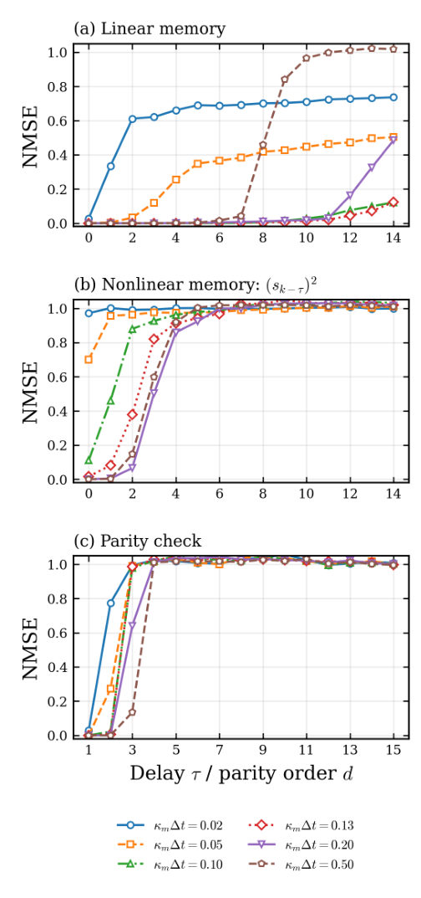
<figcaption class="paper-figure-caption"><b>Fig 4.</b> FIG. 3. Effect of κm∆t on the benchmark performance of the proposed reservoir. (a) Linear memory task, (b) nonlinear memory task with target yk = (sk−τ)2, and (c) parity-check task.</figcaption>
</figure>
<figure class="paper-figure-card">
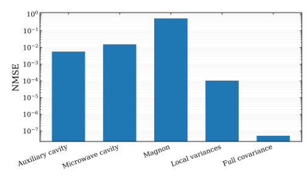
<figcaption class="paper-figure-caption"><b>Fig 5.</b> FIG. 4. Comparison of probing performance across different reservoir feature sets.</figcaption>
</figure>
</div>

<p><strong>Summary.</strong> This paper develops a quantum reservoir computing framework utilizing a hybrid cavity magnomechanical system. By encoding time-dependent signals into the auxiliary cavity detuning, the system's covariance matrix is used to process information. The results confirm that this platform is promising for continuous-variable quantum computation, especially when leveraging inter-mode correlations.</p>
<p><strong>Why it may be interesting.</strong> This work directly applies advanced concepts from open quantum systems (magnomechanics, cavity QED) to a computational task (QRC), providing a concrete platform for quantum information processing using controllable physical interactions.</p>
<details>
<summary>Detailed structure</summary>
<p><strong>Main problem.</strong> The paper proposes and analyzes a Gaussian quantum reservoir computing (QRC) framework to process time-dependent signals using a hybrid cavity magnomechanical system.</p>
<p><strong>Main result.</strong> The system demonstrates strong temporal memory and can reconstruct time-dependent signals encoded in the input detuning, with inter-mode correlations significantly enhancing the accessible information.</p>
<p><strong>Method.</strong> The analysis linearizes the system dynamics around the steady state, characterizing the reservoir state via the covariance matrix, which is then used in a trained linear readout.</p>
<p><strong>Model / system.</strong> The physical system is a hybrid cavity magnomechanical setup combining microwave cavity, magnon mode, and mechanical resonator, extended with an auxiliary cavity acting as an input port.</p>
<p><strong>Key observables.</strong> The covariance matrix of quadrature fluctuations, Normalized Mean-Square Error (NMSE), and the reconstructed time-dependent signal.</p>
<p><strong>Important parameters / regimes.</strong> Reservoir evolution time, input modulation strength ($\epsilon\Delta$), detuning noise ($\sigma\Delta$), and the number of measurements ($N_m$).</p>
<p><strong>Assumptions / limitations.</strong> The analysis operates in the linearized Gaussian regime, and a trade-off between encoding strength and covariance estimation precision due to finite measurement statistics is noted.</p>
<p><strong>Figures summary.</strong> Figures compare NMSE vs. delay ($  au$) for different encoding strengths and measurement budgets, showing the advantage of the full covariance matrix over local features.</p>
<p><strong>Paper structure.</strong> The paper first derives the extended Hamiltonian and dynamics using quantum Langevin equations. It then analyzes the reservoir features using the covariance matrix, benchmarks its performance on memory tasks (linear, nonlinear, parity-check), and finally investigates the impact of noise and finite measurement statistics on signal reconstruction.</p>
</details>
<details>
<summary>Abstract</summary>
<p>We propose a quantum reservoir computing framework based on a hybrid cavity magnomechanical system in the linearized Gaussian regime. The reservoir combines microwave-cavity, magnon, and mechanical degrees of freedom, and is extended by an auxiliary cavity acting as an input port, with time-dependent signals encoded in its detuning. The covariance matrix of the quadrature fluctuations provides the features for a trained linear readout. Using linear-memory, nonlinearmemory, and parity-check benchmarks, we find strong temporal memory together with more limited nonlinear processing, whose balance is controlled by the reservoir evolution time, and we show that intermode correlations substantially enhance the information accessible to the readout. The same architecture reconstructs a time-dependent signal encoded in the auxiliary-cavity detuning, with an accuracy governed by the interplay between the internal couplings and the encoding strength, and robust against Gaussian detuning noise. Accounting for finite measurement statistics reveals a trade-off between encoding strength and the precision of the covariance estimation, so that the optimal encoding depends on the available measurement budget. These results establish hybrid cavity magnomechanical systems as a promising platform for continuous-variable quantum reservoir computing with potential applications in signal probing.</p>
</details>
<p><sub><a href="#top">↑ back to top</a></sub></p>

<p><a id="paper-2609.23651"></a></p>
<h3 id="nonequilibrium-energy-transport-and-fluctuations-in-two-photon-driven-nonlinear-quantum-optical-systems"><a href="http://arxiv.org/abs/2609.23651v1">Nonequilibrium energy transport and fluctuations in two-photon-driven nonlinear quantum optical systems</a></h3>
<p><strong>Authors:</strong> Y. T. Chen, Y. W. Lu, J. C. Lu, C. Wang<br>
<strong>Type:</strong> theory · <strong>Category:</strong> other · <strong>PDF:</strong> <a href="https://arxiv.org/pdf/2609.23651v1">https://arxiv.org/pdf/2609.23651v1</a><br>
<strong>Analysis basis:</strong> full PDF text, analyzed in chunks
<strong>Topic relevance:</strong> <code>Full counting statistics</code> <strong>3/5</strong> · <code>methods for driven-dissipative</code> <strong>3/5</strong> · <code>Tavis-Cummings &amp; cavity-many-emitter</code> <strong>2/5</strong> · <code>Keldysh / 2PI / non-Gaussian methods</code> <strong>1/5</strong> · <code>driven-dissipative phase transition</code> <strong>1/5</strong> · <code>non-equilibrium universality</code> <strong>1/5</strong> · <code>quantum measurements</code> <strong>1/5</strong></p>
<div class="figure-strip-hint">↔ Scroll figures horizontally</div>
<div class="paper-figures-scroll">
<figure class="paper-figure-card">
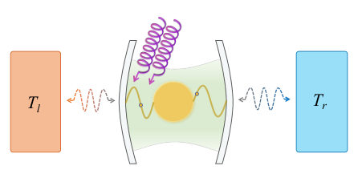
<figcaption class="paper-figure-caption"><b>Fig 1.</b> FIG. 1. Schematic of a nonequilibrium quantum optical sys- tem under two-photon driving. The central region represents a driven quantum optical system, such as a light-matter inter- acting system. The double-helical line with an arrow denotes the external two-photon drive. The bosonic reservoirs on the left and right are at temperatures Tl and Tr, respectively, and the dashed wavy arrows indicate their dissipative couplings to the quantum system.</figcaption>
</figure>
<figure class="paper-figure-card">
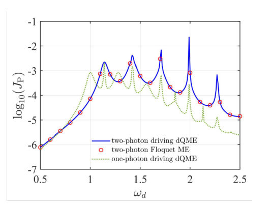
<figcaption class="paper-figure-caption"><b>Fig 2.</b> FIG. 2. Comparison of the drive input energy current in the Kerr resonator as a function of driving frequency for different driving protocols. The blue solid line shows the result of the two-photon-driven quantum master equation, the red circles show the Floquet master equation result, and the green dashed line shows the result of the single-photon-driven quantum mas- ter equation. The parameters are the photon-number cutoff Nph = 30, resonator frequency ω0 = 1, driving amplitude η = 0.02ω0, Kerr nonlinearity U = ω0/(5 √</figcaption>
</figure>
<figure class="paper-figure-card">
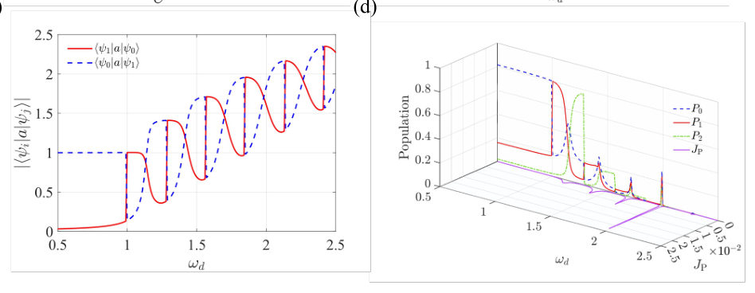
<figcaption class="paper-figure-caption"><b>Fig 3.</b> FIG. 3. Resonance structure and physical mechanism of the drive input energy current in the two-photon-driven Kerr resonator. (a) Top view of the three-dimensional distribution of JP as a function of Kerr nonlinearity U and driving frequency ωd. (b) Dependence of the system energy-level spacings ∆on driving frequency ωd. (c) Relevant transition matrix elements as functions of ωd. (d) Low-energy-state populations P0, P1, and P2, together with JP, as functions of ωd. In (a), higher-order resonances associated with two-photon transitions are confined to very narrow parameter regions at large U, causing the numerically obtained resonance lines to appear approximately discrete. For panels...</figcaption>
</figure>
<figure class="paper-figure-card">
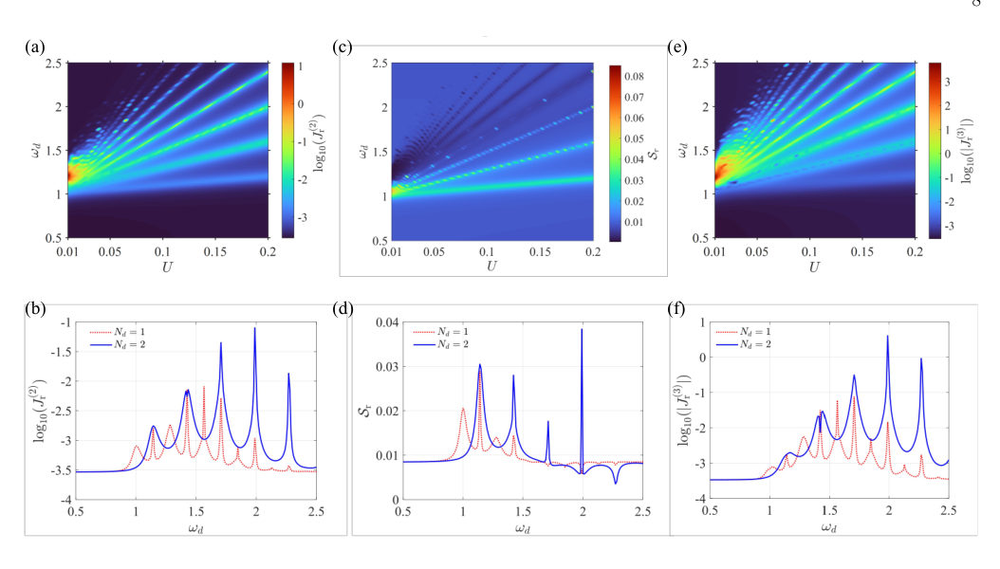
<figcaption class="paper-figure-caption"><b>Fig 4.</b> FIG. 4. Parameter dependence of energy-current fluctuations, the signal-to-noise ratio, and the third current cumulant in the photon-driven Kerr resonator. (a) Top view of the three-dimensional distribution of the second-order current fluctuations log10(J(2) r ) as a function of Kerr nonlinearity U and driving frequency ωd. (b) log10(J(2) r ) as a function of ωd at U = ω0/(5 √</figcaption>
</figure>
<figure class="paper-figure-card">
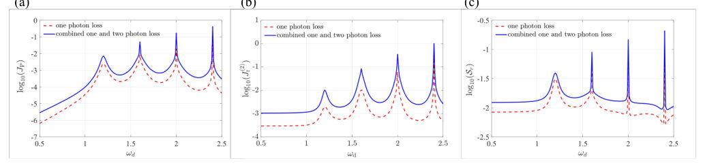
<figcaption class="paper-figure-caption"><b>Fig 5.</b> FIG. 5. Effect of two-photon loss on nonequilibrium transport in the Kerr resonator. (a) Drive input energy current log10(JP), (b) second-order current fluctuations log10(J(2) r ), and (c) signal-to-noise ratio log10(Sr) as functions of driving frequency ωd. The red dashed line represents single-photon loss alone, and the blue solid line represents coexisting single- and two-photon loss channels. The parameters are Nph = 30, ω0 = 1, η = 0.02ω0, U = 0.2ω0, αl = αr = 0.001 for both single- and two-photon dissipation, ωc = 10ω0, kBTl = 0.8ω0, and kBTr = 0.4ω0.</figcaption>
</figure>
</div>

<p><strong>Summary.</strong> This theoretical paper develops a comprehensive framework using Full Counting Statistics to analyze energy transport and fluctuations in nonlinear quantum optical systems driven by two-photon light. It demonstrates that two-photon resonance leads to enhanced energy currents and improved signal-to-noise ratios compared to single-photon driving. The methodology is crucial for interpreting quantum dissipation effects in advanced quantum devices.</p>
<p><strong>Why it may be interesting.</strong> This work is highly relevant to AMO physics and quantum optics as it provides advanced theoretical tools (FCS, driven master equations) to quantify energy flow and noise in driven, dissipative quantum light-matter interactions.</p>
<details>
<summary>Detailed structure</summary>
<p><strong>Main problem.</strong> The paper addresses the complex challenge of understanding nonequilibrium energy transport and fluctuations when driven by nonclassical light in nonlinear quantum optical systems.</p>
<p><strong>Main result.</strong> The study reveals that two-photon driving causes a pronounced, resonant enhancement of the energy current, significantly boosting the signal-to-noise ratio compared to single-photon driving.</p>
<p><strong>Method.</strong> The authors employ a driven quantum master equation framework combined with the rigorous formalism of Full Counting Statistics (FCS) to calculate current cumulants.</p>
<p><strong>Model / system.</strong> The model applies to quantum optical systems, specifically analyzing a Kerr resonator and a nonlinear Jaynes-Cummings model coupled to bosonic reservoirs. The dynamics are described by a driven quantum master equation formulated in the rotating frame.</p>
<p><strong>Key observables.</strong> Energy current (average current), second-order current fluctuation, and higher-order current cumulants.</p>
<p><strong>Important parameters / regimes.</strong> Two-photon driving strength, resonance conditions, and reservoir temperatures ($T_l, T_r$).</p>
<p><strong>Assumptions / limitations.</strong> The analysis relies on the Born-Markov approximation and utilizes low-energy-state approximations for simplifying the current calculations.</p>
<p><strong>Figures summary.</strong> Figure 1 provides a schematic overview of the nonequilibrium quantum optical system setup, showing the cavity coupled to reservoirs.</p>
<p><strong>Paper structure.</strong> The paper builds from formulating the driven quantum master equation to applying Full Counting Statistics. It then analyzes the resulting current and fluctuation equations for specific models (Kerr/Jaynes-Cummings), deriving resonance conditions and interpreting the physical origin of the current enhancement via dressed-state hybridization.</p>
</details>
<details>
<summary>Abstract</summary>
<p>Understanding nonequilibrium transport and fluctuations driven by nonclassical light in nonlinear quantum optical systems is challenging. Here, we formulate a driven quantum master equation in the rotating frame combined with full counting statistics, retaining the drive-induced frequency shifts in the system-reservoir interactions and providing a unified description of drive-assisted incoherent transitions based on the rotated system dressed-basis. Applied to a Kerr resonator and a nonlinear Jaynes-Cummings model, the approach reveals pronounced multiphoton-resonant enhancement of the drive input energy current, with significant high peaks under two-photon driving compared to the single-photon case. The two-photon resonance relations are analytically obtained. Resonance structure in the nonlinear Jaynes-Cummings model nonlinearly relies on qubit-photon couplings, with additional dressed-state branches. A low-energy-state approximation attributes the resonant current enhancement to dressed-state hybridization and efficient activation of incoherent energy exchange processes. Beyond the average current, two-photon-driving induced energy exchange picture near resonance also substantially modifies the second-order current fluctuation and higher-order current cumulant, while increasing the time-normalized signal-to-noise ratio. Adding two-photon loss introduces extra incoherent photon-pair exchange pathways and further reshapes the current and its fluctuations. We hope these results may deepen interpretation of photon driving and quantum dissipation cooperatively governing nonequilibrium energy transport and fluctuations.</p>
</details>
<p><sub><a href="#top">↑ back to top</a></sub></p>

<p><a id="paper-2609.24572"></a></p>
<h3 id="the-superconducting-talbot-effect-in-phased-array-josephson-junctions"><a href="http://arxiv.org/abs/2609.24572v1">The Superconducting Talbot Effect in Phased-Array Josephson Junctions</a></h3>
<p><strong>Authors:</strong> Hechen Ren, Ziying Li<br>
<strong>Type:</strong> both · <strong>Category:</strong> other · <strong>PDF:</strong> <a href="https://arxiv.org/pdf/2609.24572v1">https://arxiv.org/pdf/2609.24572v1</a><br>
<strong>Analysis basis:</strong> full PDF text, analyzed in chunks
<strong>Topic relevance:</strong> <code>analog quantum simulation</code> <strong>3/5</strong> · <code>interference shaping light</code> <strong>3/5</strong> · <code>quantum measurements</code> <strong>2/5</strong> · <code>Frenkel-Kontorova</code> <strong>1/5</strong> · <code>Keldysh / 2PI / non-Gaussian methods</code> <strong>1/5</strong> · <code>methods for driven-dissipative</code> <strong>1/5</strong> · <code>quantum optics experiment</code> <strong>1/5</strong></p>
<div class="figure-strip-hint">↔ Scroll figures horizontally</div>
<div class="paper-figures-scroll">
<figure class="paper-figure-card">
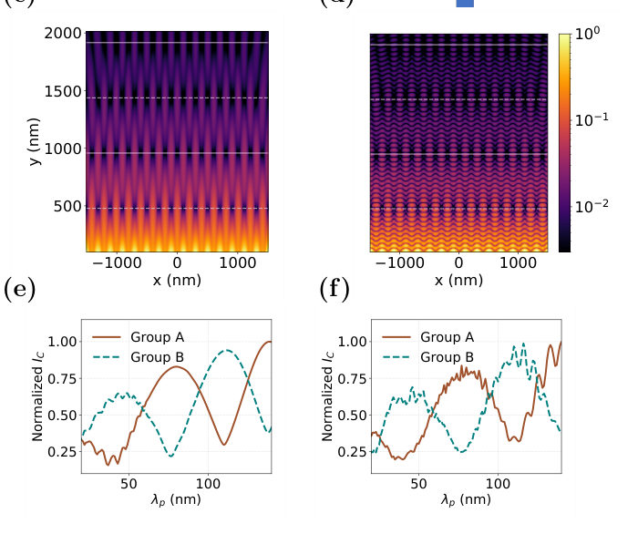
<figcaption class="paper-figure-caption"><b>Fig 1.</b> FIG. 1. The superconducting Talbot effect. (a) Schematic of superconductivity induced in a 2DEG</figcaption>
</figure>
<figure class="paper-figure-card">
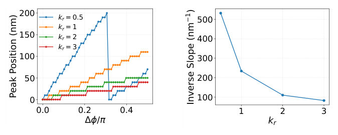
<figcaption class="paper-figure-caption"><b>Fig 2.</b> FIG. 2. Steering the fractional Talbot fringes for wavelength measurement. (a) Schematic of a</figcaption>
</figure>
<figure class="paper-figure-card">

<figcaption class="paper-figure-caption"><b>Fig 3.</b> FIG. 3. Phase-dependent critical currents for full Fermiology. Critical currents between the source</figcaption>
</figure>
<figure class="paper-figure-card">

<figcaption class="paper-figure-caption"><b>Fig 4.</b> FIG. 4. Regression model performance. Model accuracy for spinful Fermiology with y = 1 µm</figcaption>
</figure>
<figure class="paper-figure-card">

<figcaption class="paper-figure-caption"><b>Fig 5.</b> FIG. 5. Tight-binding simulation on a square lattice. Real-space map of induced superconducting</figcaption>
</figure>
</div>

<p><strong>Summary.</strong> This paper demonstrates the superconducting Talbot effect in phased-array Josephson junctions to probe the electronic structure of 2DEGs. By actively controlling the junction phase and using sub-wavelength sampling, the authors can measure the lateral shift of the quantum interference pattern. This technique provides a versatile method for directly extracting Fermi wavelengths and characterizing complex Fermi surface textures.</p>
<p><strong>Why it may be interesting.</strong> This work bridges concepts from quantum optics (Talbot effect) and condensed matter physics (superconductivity, Fermi surfaces) using superconducting Josephson junctions, providing a novel, non-destructive diagnostic tool for quantum materials.</p>
<details>
<summary>Detailed structure</summary>
<p><strong>Main problem.</strong> The paper investigates the superconducting Talbot effect, a macroscopic quantum self-imaging phenomenon, and develops a method to extract fundamental Fermi wavelengths from this effect.</p>
<p><strong>Main result.</strong> The superconducting Talbot effect is successfully demonstrated using phased-array Josephson junctions, allowing for the active steering and measurement of the underlying Fermi wavelength across various Fermi surface types.</p>
<p><strong>Method.</strong> The authors use a phased-array Josephson junction (PAJJ) coupled with a Vernier-scale collector array to perform sub-wavelength sampling of the fractional Talbot pattern.</p>
<p><strong>Model / system.</strong> The physical system is a proximitized two-dimensional electron gas (2DEG) interfaced with a PAJJ. The analysis employs tight-binding models on a square lattice and utilizes the Bogoliubov-de Gennes Hamiltonian to describe the induced superconducting order parameter.</p>
<p><strong>Key observables.</strong> The lateral shift ($\Delta x(L)$) of the fractional Talbot pattern peak position, and the phase-dependent critical current ($I_c$) as a function of the applied phase difference ($\Delta\phi$).</p>
<p><strong>Important parameters / regimes.</strong> Fermi wavelength ($\lambda_p$), phase difference ($\Delta\phi$), and the Talbot distance ($Z_T$).</p>
<p><strong>Assumptions / limitations.</strong> The method relies on the ability to map real-space quantum interference patterns and assumes the applicability of the tight-binding model to describe the superconducting gap.</p>
<p><strong>Figures summary.</strong> Figures illustrate the superconducting Talbot effect, the dependence of critical current on pair wavelength for different Fermi surfaces, and the use of a regression model to fit the phase-dependent critical currents to diagnose Fermi surface textures.</p>
<p><strong>Paper structure.</strong> The paper first introduces the superconducting Talbot effect and its measurement via critical current oscillations. It then details the advanced technique using a PAJJ and Vernier array to measure the lateral shift. Finally, it applies this method to diagnose the Fermi surface texture across helical, spin-degenerate, and spin-orbit-split regimes.</p>
</details>
<details>
<summary>Abstract</summary>
<p>We introduce the superconducting Talbot effect---a macroscopic quantum self-imaging phenomenon occurring when proximitized Cooper pairs propagate through a ballistic two-dimensional electron gas. By configuring periodic superconducting leads into a phased-array Josephson junction with programmable phase differences, we demonstrate active steering of the resulting superconducting Talbot carpet. To overcome transport resolution limits, we design a Vernier-scale collector array that performs sub-wavelength sampling of the fractional Talbot pattern. This approach maps real-space quantum interference with high robustness to disorder, enabling direct extraction of Fermi wavelengths across helical, spin-degenerate, and spin-orbit-split Fermi surfaces. Tight-binding numerical calculations on a square lattice validate the real-space interference patterns. Our results establish a versatile framework for coherent wavefront engineering and quantum materials diagnostics in superconducting optics.</p>
</details>
<p><sub><a href="#top">↑ back to top</a></sub></p>

<p><a id="paper-2609.24873"></a></p>
<h3 id="measuring-correlations-using-local-and-nonlocal-quenches"><a href="http://arxiv.org/abs/2609.24873v1">Measuring correlations using local and nonlocal quenches</a></h3>
<p><strong>Authors:</strong> Alexey G. Mikhaylenko, Andrew G. Semenov<br>
<strong>Type:</strong> theory · <strong>Category:</strong> statistical mechanics · <strong>PDF:</strong> <a href="https://arxiv.org/pdf/2609.24873v1">https://arxiv.org/pdf/2609.24873v1</a><br>
<strong>Analysis basis:</strong> full PDF text, analyzed in chunks
<strong>Topic relevance:</strong> <code>Keldysh / 2PI / non-Gaussian methods</code> <strong>3/5</strong> · <code>non-equilibrium universality</code> <strong>3/5</strong> · <code>quantum measurements</code> <strong>2/5</strong> · <code>analog quantum simulation</code> <strong>1/5</strong> · <code>methods for driven-dissipative</code> <strong>1/5</strong> · <code>scars &amp; prethermalization</code> <strong>1/5</strong></p>
<div class="figure-strip-hint">↔ Scroll figures horizontally</div>
<div class="paper-figures-scroll">
<figure class="paper-figure-card">

<figcaption class="paper-figure-caption"><b>Fig 1.</b> FIG. 1. Dependence on the coordinate M(x −xQ) and time M(t −tQ) of the smeared retarded Green’s function GR S for a massive scalar theory in d = 1 for the quench localization region Mϵ = 0.2, 1, 5(a,b,c).</figcaption>
</figure>
<figure class="paper-figure-card">

<figcaption class="paper-figure-caption"><b>Fig 2.</b> FIG. 2. Dependence on the coordinate µ(x −xQ) and time µ(t −tQ) of the smeared retarded Green’s function GR S for a massless scalar theory in d = 1 for the quench localization region µϵ = 0.2, 1, 5(a,b,c). Here µ has dimension of mass and arbitrary positive value.</figcaption>
</figure>
<figure class="paper-figure-card">

<figcaption class="paper-figure-caption"><b>Fig 3.</b> FIG. 3. The case when the light cone with the origin at the point ⃗xQ,j has not yet intersected with the light cone with the origin at any other point of nonlocal quench.</figcaption>
</figure>
<figure class="paper-figure-card">

<figcaption class="paper-figure-caption"><b>Fig 4.</b> FIG. 4. Dependence on the coordinate M(x −xQ) and time M(t −tQ) of the average field after the nonlocal quench for a massive scalar theory in d = 1. Here Mϵ = 1, λ = ℏ= 1.</figcaption>
</figure>
<figure class="paper-figure-card">

<figcaption class="paper-figure-caption"><b>Fig 5.</b> FIG. 5. Dependence on the coordinate µ(x −xQ) and time µ(t −tQ) of the average field after the nonlocal quench for a massless scalar theory in d = 1. Here µ is a momentum IR cutoff, µϵ = 10−3, λ = ℏ= 1.</figcaption>
</figure>
</div>

<p><strong>Summary.</strong> This paper develops a theoretical framework to measure initial state correlation functions in quantum field theories using controlled quantum quenches. By analyzing the time evolution of the average field after applying local or nonlocal perturbations, the authors show that these measurements can systematically extract information about initial state correlations, including non-Gaussian ones. The method is rigorously derived for free scalar fields, suggesting a powerful diagnostic tool for non-equilibrium quantum dynamics.</p>
<p><strong>Why it may be interesting.</strong> This work provides a concrete, measurable theoretical tool—using quench dynamics—to experimentally probe complex, non-Gaussian initial correlations in quantum many-body systems, bridging theoretical QFT with experimental measurement techniques.</p>
<details>
<summary>Detailed structure</summary>
<p><strong>Main problem.</strong> The paper proposes a theoretical method to measure initial state correlation functions in a quantum field system by analyzing the evolution of the average field after applying quantum quenches.</p>
<p><strong>Main result.</strong> Local quenches allow measuring initial state averages $\langle \hat{\varphi}_S^n 
angle$, while nonlocal quenches are necessary to probe higher-order, non-Gaussian correlations of the initial state.</p>
<p><strong>Method.</strong> The method involves calculating the time evolution of the average field $\langle \hat{\varphi}(t, \vec{x}) 
angle_Q$ following a quench perturbation $\hat{V}$, which is related to the initial state correlations via the smeared retarded Green's function.</p>
<p><strong>Model / system.</strong> The analysis is performed on free real scalar field theories (massive or massless) in $d$-dimensional space, described by a standard Hamiltonian.</p>
<p><strong>Key observables.</strong> The average field $\langle \hat{\varphi}(t, \vec{x}) 
angle_Q$ and the smeared retarded Green's function $G_R^S(t-t_Q, \vec{x}-\vec{x}_Q)$.</p>
<p><strong>Important parameters / regimes.</strong> The mass $M$ (massive vs. massless), the time difference $t-t_Q$, and the smearing parameter $\epsilon$.</p>
<p><strong>Assumptions / limitations.</strong> The method is strictly applicable only to non-interacting (free) theories; for interacting systems, higher-order non-equilibrium QFT methods are required.</p>
<p><strong>Figures summary.</strong> Figures illustrate the evolution of the retarded Green's function for massive and massless theories in $d=1$, and show the time/space dependence of the average field after both local and nonlocal quenches.</p>
<p><strong>Paper structure.</strong> The paper develops the theoretical framework by first analyzing the local quench case to extract initial state averages, then extends the formalism to nonlocal quenches to access non-Gaussian correlations, and finally discusses the asymptotic behavior for massive and massless theories.</p>
</details>
<details>
<summary>Abstract</summary>
<p>We present a theoretical proposal for measuring correlation functions in a quantum field system based on the use of quantum quenches. Using the examples of massive and massless scalar field theories, we show that a short-term perturbation of the system leads to a dependence of the further evolution of the average field on the initial state's correlation functions. Considering two types of perturbations, namely local and nonlocal quenches, we show which correlation functions can be measured in each of these cases. The proposed procedure can be applied to study non-Gaussian correlations.</p>
</details>
<p><sub><a href="#top">↑ back to top</a></sub></p>

<p><a id="paper-2609.24284"></a></p>
<h3 id="quantum-many-body-framework-for-passive-scalar-turbulence"><a href="http://arxiv.org/abs/2609.24284v1">Quantum many-body framework for passive-scalar turbulence</a></h3>
<p><strong>Authors:</strong> Zhaoyuan Meng, Long Wang, Guowei He<br>
<strong>Type:</strong> theory · <strong>Category:</strong> statistical mechanics · <strong>PDF:</strong> <a href="https://arxiv.org/pdf/2609.24284v1">https://arxiv.org/pdf/2609.24284v1</a><br>
<strong>Analysis basis:</strong> full PDF text, analyzed in chunks
<strong>Topic relevance:</strong> <code>Keldysh / 2PI / non-Gaussian methods</code> <strong>3/5</strong> · <code>methods for driven-dissipative</code> <strong>3/5</strong> · <code>analog quantum simulation</code> <strong>1/5</strong> · <code>correlated / nonlocal dissipation</code> <strong>1/5</strong> · <code>driven-dissipative phase transition</code> <strong>1/5</strong> · <code>non-equilibrium universality</code> <strong>1/5</strong></p>
<div class="figure-strip-hint">↔ Scroll figures horizontally</div>
<div class="paper-figures-scroll">
<figure class="paper-figure-card">

<figcaption class="paper-figure-caption"><b>Fig 1.</b> FIG. 1. Schematic of the non-Hermitian Wegner flow for passive-scalar turbulence. The scalar modes of passive-scalar turbulence, governed by Eq. (1) in (a), are mapped to second-quantized bosonic modes in (b). The diagonal terms govern the self-evolution of individual modes, while the off-diagonal couplings 𝐿𝒑𝒒(𝑡) ( 𝒑≠𝒒) transfer a bosonic mode from 𝒒to 𝒑with a strength determined by 𝒗. (c) The time-dependent bosonic dynamics is lifted to an extended space spanned by the spatial mode 𝒌and frequency 𝜔, where temporal fluctuations manifest as couplings between different frequency sectors. The original time-dependent problem is thereby recast as a static algebraic problem in this extended (𝒌,...</figcaption>
</figure>
<figure class="paper-figure-card">

<figcaption class="paper-figure-caption"><b>Fig 2.</b> FIG. 2. Space-time correlations and dynamic zero-mode scal- ing. (a) Normalized second-order space-time correlation 𝑅(𝑟, 𝜏) = 𝐶E 1,1(𝑟, 𝜏)/𝐶eq 2 (0), showing contours from the exact solution (Eq. (S159) in SM [41]) and the elliptic approximation [22]. (b) Effective exponent of the quasi-Lagrangian fourth-order relative zero mode, illustrating the crossover from equal-time anomalous scaling to the 𝑠−1 regime. The parameters are 𝑑= 3, 𝜉= 4/3, 𝜁4 = 1.05, 𝑈/𝑉0 = 1.5, and (𝜘+ 𝐷0)/(𝑉0𝐿𝜉) = 0.02.</figcaption>
</figure>
</div>

<p><strong>Summary.</strong> This work develops a sophisticated non-Hermitian bosonic framework to unify the description of equal-time and multi-time anomalous statistics in passive-scalar turbulence. By applying a continuous Wegner flow, the authors simplify the governing stochastic equation, leading to the analytical derivation of a scaling function that precisely describes how spatial correlations decay over time lags.</p>
<p><strong>Why it may be interesting.</strong> While focused on fluid dynamics, the use of a non-Hermitian bosonic framework and the mapping of stochastic PDEs to solvable quantum Hamiltonians provides powerful, generalizable mathematical tools applicable to open quantum systems and quantum field theory in non-equilibrium settings.</p>
<details>
<summary>Detailed structure</summary>
<p><strong>Main problem.</strong> The paper addresses the fundamental challenge of connecting the spatial organization of fluctuations to their temporal evolution in turbulent systems, specifically focusing on the propagation of equal-time anomalous statistics across multiple observation times.</p>
<p><strong>Main result.</strong> The authors derive an explicit fourth-order two-time zero mode scaling function, $\Phi_{2,2}(s)$, which analytically describes how relative dispersion weakens sensitivity to the initial separation in passive-scalar turbulence.</p>
<p><strong>Method.</strong> A non-Hermitian bosonic framework is developed, utilizing second quantization and a continuous Wegner flow to map the stochastic partial differential equation onto a solvable, diagonal effective Hamiltonian.</p>
<p><strong>Model / system.</strong> The study is applied to passive-scalar turbulence, modeled using the Taylor-Kraichnan (TK) equation. The theoretical machinery involves lifting the stochastic PDE to an extended wave-frequency space and analyzing the resulting bosonic Hamiltonian.</p>
<p><strong>Key observables.</strong> Equal-time anomalous statistics, multi-time Eulerian correlation functions ($C_E^n$), and the relative zero-mode scaling function $\Phi_{2,2}(s)$.</p>
<p><strong>Important parameters / regimes.</strong> The analysis considers the inertial range, time lags ($ au$), and spatial separations ($r$), leading to scaling exponents like $\zeta_4$.</p>
<p><strong>Assumptions / limitations.</strong> The derivation relies on an isotropic radial closure and the ability to separate the dynamics into diagonal (uniform advection/diffusion) and off-diagonal (stochastic coupling) parts.</p>
<p><strong>Figures summary.</strong> Figure 1 schematically illustrates the entire theoretical pipeline: from the original PDE to second quantization, lifting to extended space, applying the Wegner flow, and finally reconstructing the statistics.</p>
<p><strong>Paper structure.</strong> The paper progresses by first establishing the non-Hermitian bosonic framework via the Wegner flow to simplify the stochastic PDE. It then analyzes the equal-time sector (recovering the Kraichnan hierarchy) before tackling the multi-time sector, culminating in the derivation and solution of the scaling function $\Phi_{2,2}(s)$ for the two-time correlation.</p>
</details>
<details>
<summary>Abstract</summary>
<p>How spatial structures manifest in multi-time correlations is a fundamental question in turbulence. We develop a non-Hermitian bosonic framework that unifies equal-time anomalous statistics and their temporal propagation within a common operator representation. A continuous Wegner flow reorganizes stochastic mode couplings in an extended wave-frequency space. Applied to the Taylor-Kraichnan model, the framework recovers the established equal-time hierarchy and constructs multi-time contributions through propagators acting on successively smaller sets of active fields. This construction separates uniform transport from intrinsic relative dynamics and shows how a higher-order equal-time state evolves under a generator acting only on the fields that remain dynamically active. Within an isotropic radial closure, we derive an explicit fourth-order two-time zero mode scaling function that describe how relative dispersion progressively weakens sensitivity to the initial separation. The framework thus connects spatial intermittency to temporal evolution by identifying how the sequence of observation times determines the propagation of equal-time anomalous structures.</p>
</details>
<p><sub><a href="#top">↑ back to top</a></sub></p>

<p><a id="paper-2609.22564"></a></p>
<h3 id="generating-dicke-state-graphs"><a href="http://arxiv.org/abs/2609.22564v1">Generating Dicke State Graphs</a></h3>
<p><strong>Authors:</strong> Rebekah Herrman<br>
<strong>Type:</strong> theory · <strong>Category:</strong> quantum information and computing · <strong>PDF:</strong> <a href="https://arxiv.org/pdf/2609.22564v1">https://arxiv.org/pdf/2609.22564v1</a><br>
<strong>Analysis basis:</strong> full PDF text, analyzed in chunks
<strong>Topic relevance:</strong> <code>Dicke superradiance</code> <strong>3/5</strong> · <code>analog quantum simulation</code> <strong>3/5</strong> · <code>Full counting statistics</code> <strong>1/5</strong> · <code>quantum optics experiment</code> <strong>1/5</strong> · <code>superradiant laser</code> <strong>1/5</strong></p>
<div class="figure-strip-hint">↔ Scroll figures horizontally</div>
<div class="paper-figures-scroll">
<figure class="paper-figure-card">

<figcaption class="paper-figure-caption"><b>Fig 1.</b> FIG. 1: The doubled complete graph on six vertices. Every pair {i, j} carries two parallel edges: one red at i and blue at j, the other red at j and blue at i, for 30 edges in total. Since each edge contributes exactly one red half and a perfect matching has three edges, every matching yields a bitstring of Hamming weight k = 3.</figcaption>
</figure>
<figure class="paper-figure-card">

<figcaption class="paper-figure-caption"><b>Fig 2.</b> FIG. 2: The graph that generates D5 2 ⊗|0⟩. It consists of a doubled K5 on vertices 1, . . . , 5 in which every pair {i, j} carries two parallel edges, each half red and half blue, such that one edge has red half at i and one edge has red half at j, together with all-blue spokes joining each vertex to vertex 6. This is an example of a sink construction. If the half edges from K5 to 6 were all colored red at i ∈K5 and blue at 6, it would generate D5 3 ⊗|0⟩using a source construction.</figcaption>
</figure>
<figure class="paper-figure-card">

<figcaption class="paper-figure-caption"><b>Fig 3.</b> FIG. 3: A perfect matching {13, 24, 56} in the graph of Fig. 2, with red halves at 1 and 2, yielding the bitstring 110000. Each of the 5 2  = 10 weight-two bitstrings arises from exactly 3! = 6 of the 60 perfect matchings.</figcaption>
</figure>
<figure class="paper-figure-card">

<figcaption class="paper-figure-caption"><b>Fig 4.</b> FIG. 4: The doubled complete bipartite experiment graph on X = {1, 2, 3} and Y = {4, 5, 6}. Every pair {i, j} with i ∈X, j ∈Y carries two parallel crystals, one emitting |1i, 0j⟩and one emitting |0i, 1j⟩, for 18 crystals in total. Every crystal is excitation-balanced and every coincidence uses three crystals, so every coincidence registers Hamming weight 3.</figcaption>
</figure>
</div>

<p><strong>Summary.</strong> This paper develops graph-theoretic methods to construct photonic quantum circuits that generate specific Dicke states. By analyzing perfect matchings in specially designed graphs, the authors prove that they can reliably generate states of the form $|D_a^k
angle \otimes |0
angle^{\otimes b}$. This offers a constructive solution to a problem whose general verification is computationally hard.</p>
<p><strong>Why it may be interesting.</strong> This work provides concrete, graph-theoretic blueprints for generating highly entangled states like Dicke states, which are fundamental resources in quantum information processing and quantum optics.</p>
<details>
<summary>Detailed structure</summary>
<p><strong>Main problem.</strong> The primary goal is to construct explicit families of graphs that provably generate Dicke states, overcoming the computational difficulty of verifying the general Dicke FORALL condition.</p>
<p><strong>Main result.</strong> The authors provide a construction using doubled complete subgraphs and auxiliary vertices that guarantees the generation of $|D_a^k
angle \otimes |0
angle^{\otimes b}$ states, with specific counts for realized bitstrings.</p>
<p><strong>Method.</strong> The method involves modeling photonic experiments using edge-colored weighted graphs, where the generated state is determined by the superposition of perfect matchings in the graph.</p>
<p><strong>Model / system.</strong> The physical model is photonic quantum experiments simulated by graph theory, where vertices are optical paths and edges represent SPDC crystals. The state generation relies on analyzing the perfect matchings of these graphs.</p>
<p><strong>Key observables.</strong> The number of perfect matchings realizing a specific bitstring $\mu(x)$, and the Hamming weight of the resulting excitation pattern.</p>
<p><strong>Important parameters / regimes.</strong> The parameters include $a$ (signal paths), $k$ (target excitation weight), and $b = |a-2k|$ (spectator modes).</p>
<p><strong>Assumptions / limitations.</strong> The construction avoids crystals with an excitation yield of 2 ($
ho(e)=2$), and the general verification of the Dicke FORALL condition is coNP-complete.</p>
<p><strong>Figures summary.</strong> Figure 1 illustrates the doubled complete graph on six vertices. Figure 2 shows a graph generating $|D_5^2
angle \otimes |0
angle$ using a sink construction, and Figure 3 shows a specific perfect matching yielding the bitstring 110000.</p>
<p><strong>Paper structure.</strong> The paper develops graph theory tools to model quantum state generation, establishes the relationship between perfect matchings and basis states, and culminates in constructing explicit families of graphs that satisfy the Dicke FORALL condition for specific states.</p>
</details>
<details>
<summary>Abstract</summary>
<p>Graph theory is a powerful tool in quantum computing, with applications ranging from quantum circuit synthesis and optimization to entanglement mapping. Recent work has shown how one can use edge-colored graphs to model photonic experiments that generate GHZ and W states. However, the latter work also proved that verifying that a graph models a Dicke state experiment is coNP-complete. In this work, we provide families of graphs that generate $|D_{k}^a\rangle \otimes |0\rangle^{\otimes b }$, where $b = |a-2k|$ is the number of spectator modes. The graph setup consists of a doubled complete subgraph on $a$ vertices and a collection of auxiliary vertices. We prove that every coincidence carries exactly $k$ excitations, every weight-$k$ computational basis state on bitstrings of length $a$ is realized, and each of those bitstrings is realized exactly $(n/2)!$ times, where $n = a+b$. Since verifying the Dicke FORALL condition is coNP-complete in general, constructing explicit families that provably generate Dicke states is of interest.</p>
</details>
<p><sub><a href="#top">↑ back to top</a></sub></p>

<p><a id="paper-2609.24844"></a></p>
<h3 id="navier-stokes-hydrodynamics-near-the-critical-point-with-out-of-equilibrium-modes"><a href="http://arxiv.org/abs/2609.24844v1">Navier-Stokes hydrodynamics near the critical point with out-of-equilibrium modes</a></h3>
<p><strong>Authors:</strong> Md Hasanujjaman, Golam Sarwar, Mahfuzur Rahaman, Abhijit Bhattacharyya, Jane Alam<br>
<strong>Type:</strong> theory · <strong>Category:</strong> statistical mechanics · <strong>PDF:</strong> <a href="https://arxiv.org/pdf/2609.24844v1">https://arxiv.org/pdf/2609.24844v1</a><br>
<strong>Analysis basis:</strong> full PDF text, analyzed in chunks
<strong>Topic relevance:</strong> <code>non-equilibrium universality</code> <strong>3/5</strong> · <code>Keldysh / 2PI / non-Gaussian methods</code> <strong>2/5</strong> · <code>methods for driven-dissipative</code> <strong>2/5</strong> · <code>correlated / nonlocal dissipation</code> <strong>1/5</strong> · <code>driven-dissipative phase transition</code> <strong>1/5</strong></p>
<div class="figure-strip-hint">↔ Scroll figures horizontally</div>
<div class="paper-figures-scroll">
<figure class="paper-figure-card">

<figcaption class="paper-figure-caption"><b>Fig 1.</b> FIG. 1. The variation of the Sρρ(k,ω) with ω is shown when the system is away from the critical</figcaption>
</figure>
<figure class="paper-figure-card">

<figcaption class="paper-figure-caption"><b>Fig 2.</b> FIG. 2. The variation of the Sρρ(k,ω) with ω is shown when the system is near the critical point.</figcaption>
</figure>
<figure class="paper-figure-card">

<figcaption class="paper-figure-caption"><b>Fig 3.</b> FIG. 3. A 3D plot of Sρρ(k,ω) with ω and k is shown at T = 20 K by choosing ¯ϕ = 0.01h0, and</figcaption>
</figure>
<figure class="paper-figure-card">

<figcaption class="paper-figure-caption"><b>Fig 4.</b> Fig. 2 presents the characteristic line-shape of Sρρ(k,ω) as a function of frequency ω at</figcaption>
</figure>
<figure class="paper-figure-card">

<figcaption class="paper-figure-caption"><b>Fig 5.</b> FIG. 4. A 3D plot of Sρρ(k,ω) with ω and ϕ is shown at T = 20 K. Left panel displays the results</figcaption>
</figure>
</div>

<p><strong>Summary.</strong> This paper develops an extended hydrodynamic theory by incorporating slow out-of-equilibrium modes (OEM) to describe fluid dynamics near a critical point. By analyzing the dynamic structure factor, the authors show that the OEM fundamentally alters the spectral signature, causing the disappearance of Brillouin peaks and a marked narrowing of the Rayleigh peak. This narrowing signifies a critical slowing down of fluctuations.</p>
<p><strong>Why it may be interesting.</strong> The rigorous application of thermodynamic consistency principles to extend hydrodynamic descriptions into non-equilibrium regimes, especially near critical points, provides advanced tools for understanding critical dynamics relevant to many-body systems.</p>
<details>
<summary>Detailed structure</summary>
<p><strong>Main problem.</strong> The study investigates how incorporating slow out-of-equilibrium modes (OEM) modifies the power spectrum of density fluctuations in fluid dynamics near a critical point, extending the validity of standard hydrodynamics.</p>
<p><strong>Main result.</strong> The inclusion of OEM causes the Brillouin peaks to vanish near the critical point and substantially reduces the width of the Rayleigh peak, signaling a slowing down of fluctuation decay rate.</p>
<p><strong>Method.</strong> The authors use linear mode analysis on the augmented hydrodynamic equations (Hydro+ scheme), derived by ensuring thermodynamic consistency with the second law of thermodynamics.</p>
<p><strong>Model / system.</strong> The system is a fluid undergoing dynamics near a critical point, modeled using Navier-Stokes equations augmented by a relaxation equation for the slow mode $\phi$.</p>
<p><strong>Key observables.</strong> The dynamic structure factor, $S_{
ho
ho}(k,\omega)$, which exhibits Rayleigh and Brillouin peaks.</p>
<p><strong>Important parameters / regimes.</strong> Temperature relative to the critical temperature ($T/T_c$), wave number ($k$), and the coupling parameters associated with the OEM ($ar{\phi}, b$).</p>
<p><strong>Assumptions / limitations.</strong> The analysis assumes that the change in transport coefficients due to the OEM is small, and it linearizes the full hydrodynamic equations around equilibrium.</p>
<p><strong>Figures summary.</strong> Figures compare $S_{
ho
ho}(k,\omega)$ away from and near the critical point, showing the effect of $\phi$ on peak structure, and illustrate the dependence of peak heights on the OEM parameters $ar{\phi}$ and $b$.</p>
<p><strong>Paper structure.</strong> The paper builds the formalism by deriving the OEM evolution equation from the entropy production principle, linearizes the resulting coupled hydrodynamic equations, and finally calculates the dynamic structure factor $S_{
ho
ho}(k,\omega)$ to analyze the spectral changes.</p>
</details>
<details>
<summary>Abstract</summary>
<p>We investigate how slow out-of-equilibrium modes (OEM), introduced to extend the regime of validity of hydrodynamics near the critical point, fundamentally reshape the power spectrum of dynamical density fluctuations. We have used the equation of motion of slow modes for the situation when the extensive nature of thermodynamics is not altered due to the introduction of OEM. We find that the extensivity condition puts an extra constraint on the coupling of OEM with the four divergence of velocity. In the absence of OEM, the dynamic structure factor exhibits three Lorentzian peaks, one at zero frequency ($ω$), called Rayleigh peak and the other two called Brillouin peaks located symmetrically about $ω=0$. When the system is away from the critical point the inclusion of the OEM preserves the symmetry of the distributions but all the peaks acquire reduced widths and the Brillouin peaks adopt unequal heights. Irrespective of the value of OEM (zero or nonzero) the Brillouin peaks vanish near the critical point. The width of the Rayleigh peak substantially reduced in presence of OEM. Such reductions of the widths in presence of the OEM indicates the reduction in the decay rate of the fluctuation which leads to slowing down of decay of the fluctuations, a distinctive feature of the critical point.</p>
</details>
<p><sub><a href="#top">↑ back to top</a></sub></p>

<p><a id="paper-2609.24327"></a></p>
<h3 id="non-hermitian-photonic-time-quasicrystal"><a href="http://arxiv.org/abs/2609.24327v1">Non-Hermitian photonic time quasicrystal</a></h3>
<p><strong>Authors:</strong> Shuhang Chen, Zhi Zheng, Qi Zhu<br>
<strong>Type:</strong> theory · <strong>Category:</strong> disordered systems and neural networks · <strong>PDF:</strong> <a href="https://arxiv.org/pdf/2609.24327v1">https://arxiv.org/pdf/2609.24327v1</a><br>
<strong>Analysis basis:</strong> full PDF text, analyzed in chunks
<strong>Topic relevance:</strong> <code>driven-dissipative phase transition</code> <strong>3/5</strong> · <code>analog quantum simulation</code> <strong>2/5</strong> · <code>methods for driven-dissipative</code> <strong>2/5</strong> · <code>interference shaping light</code> <strong>1/5</strong> · <code>non-equilibrium universality</code> <strong>1/5</strong></p>
<div class="figure-strip-hint">↔ Scroll figures horizontally</div>
<div class="paper-figures-scroll">
<figure class="paper-figure-card">

<figcaption class="paper-figure-caption"><b>Fig 1.</b> FIG. 1. A non-Hermitian photonic time quasicrystal. (a) A wave propagating through a spatially uniform medium with quasiperiodically switched permittivity. Greater block opacity denotes a larger real permittivity; the color varies from blue for negative imaginary permittivity to red for positive imaginary permittivity. Clock faces indicate the modulation phase, and the enlarged outgoing waveform illustrates amplification. (b) Real and imaginary parts of the complex permittivity for the displayed segment at h = 1.2. The imaginary component changes sign and has zero average over the modulation phase.</figcaption>
</figure>
<figure class="paper-figure-card">

<figcaption class="paper-figure-caption"><b>Fig 2.</b> FIG. 2. Quantized growth response and integer phase diagram. (a) Bulk logarithmic growth per layer g∞at ω0τ = 9.03 and (b) its integer response to the continuation parameter h. (c) Integer phases in the (h, ω0τ) plane, with white denoting n = 0. Color encodes the integer phase n; the horizontal line marks ω0τ = 9.03, the frequency used in (a,b).</figcaption>
</figure>
<figure class="paper-figure-card">

<figcaption class="paper-figure-caption"><b>Fig 3.</b> FIG. 3. Persistence and transitions of integer phases. (a) Fourier magnitudes for orders 3, 4, 5 at ω0τ = 9.03, p/q = 89/144; solid segments denote dominance. Translu- cent filling shows the numerical response (right axis); dots mark coefficient crossings. (b) Relative Fourier magnitudes |C(q) n |/ P5 j=3 |C(q) j | normalized over the three displayed or- ders to reveal the dominant Fourier order and its exchange across transitions. The dominant order sets the integer slope of the limiting growth-rate envelope. (c) Predicted n →n+1 boundaries at three frequencies, through q = 1597; the dashed line marks the analytic-strip edge h⋆. (d) Integer phases col- ored as in Fig. 2, separated by...</figcaption>
</figure>
<figure class="paper-figure-card">

<figcaption class="paper-figure-caption"><b>Fig 4.</b> FIG. 4. Integer response and spectral amplifica- tion. (a) Numerical bulk responses at ω0,1τ = 15.54 and ω0,2τ = 15.82. Green and purple fills mark where the sec- ond and first band, respectively, has the larger integer re- sponse. (b) Output band-power ratio 10 log10(P2/P1) for a fixed, equal-power two-band input, N = 120, and φ0 = 0: transfer-matrix prediction (TM, line) and PSTD simulation (circles). Matching shaded intervals identify increasing and decreasing relative amplification. Colored circles select h = 0.64 (blue) and 0.69 (orange). (c,d) PSTD displacement- field intensities at these two settings. Each map displays 10 log10[|D(x, t)|2/ maxx,t |D|2], with its own maximum over all...</figcaption>
</figure>
</div>

<p><strong>Summary.</strong> This work investigates non-Hermitian photonic time quasicrystals, showing that their amplification rate is governed by a global integer invariant derived from quasiperiodic operator theory. The integer phase dictates a quantized growth response, leading to spectral selection. This establishes a powerful link between abstract mathematical invariants and measurable optical properties.</p>
<p><strong>Why it may be interesting.</strong> It provides a concrete physical realization (photonic crystals) where a deep mathematical concept (quasiperiodic operator theory invariants) dictates a measurable, quantized physical response (amplification rate), bridging abstract mathematics with applied optics.</p>
<details>
<summary>Detailed structure</summary>
<p><strong>Main problem.</strong> To establish a connection between a global integer invariant from quasiperiodic operator theory (Avila's acceleration) and a directly observable optical propagation response in a non-Hermitian photonic time quasicrystal.</p>
<p><strong>Main result.</strong> The bulk amplification rate exhibits plateaus where its derivative is quantized to an integer $n$, demonstrating that a global integer invariant governs a tunable, quantized growth response.</p>
<p><strong>Method.</strong> The analysis uses the transfer matrix method applied to the wave equation, connecting the Lyapunov exponent calculation to the theory of quasiperiodic cocycles.</p>
<p><strong>Model / system.</strong> The system is a Non-Hermitian Photonic Time Quasicrystal (NH-PTQC) modeled by a wave equation with a complex, quasiperiodically modulated permittivity $\epsilon_m$. The dynamics are governed by a transfer matrix product.</p>
<p><strong>Key observables.</strong> Bulk logarithmic amplification rate ($g_\infty(h)$), the integer slope of this rate ($\partial_+ h g_\infty = n \in \mathbb{Z}$), and the output power ratio between two input frequencies.</p>
<p><strong>Important parameters / regimes.</strong> The complexification coordinate $h$, the modulation frequency $\alpha$, and the defect strength $\eta$.</p>
<p><strong>Assumptions / limitations.</strong> The analysis assumes the permittivity avoids zero, defining a nonsingular strip, and that the underlying analytic phase structure is preserved even in the presence of defects.</p>
<p><strong>Figures summary.</strong> Figures illustrate the NH-PTQC structure, the quantization of the amplification rate's slope into integer phases, and phase diagrams mapping these integer phases in the parameter space.</p>
<p><strong>Paper structure.</strong> The paper develops the connection between the quasiperiodic operator theory (Avila's acceleration) and the optical response by analyzing the Lyapunov exponent via transfer matrices. It then explores the robustness of this integer quantization against defects and examines the spectral selection resulting from different input frequencies belonging to different integer phases.</p>
</details>
<details>
<summary>Abstract</summary>
<p>Photonic time crystals amplify waves through temporal modulation. We study a temporal analogue of the non-Hermitian Aubry-André-Harper model. By continuing an incommensurate temporal modulation into the complex phase plane, we find that the bulk amplification rate as a function of the complexification coordinate is organized into distinct integer phases, with its slope locked to an integer within each phase. This integer is Avila's acceleration, connecting a global structure of quasiperiodic operator theory with a directly observable optical propagation response. The quantized response persists in the presence of defects in the time-dependent permittivity modulation that preserve the underlying analytic phase structure. As a wave-level consequence, two input frequencies belonging to different integer phases acquire exponentially separated amplification, producing spectral selection and reshaping the temporal beat pattern. Our results establish that a global integer of quasiperiodic operator theory can govern a tunable, quantized growth response in a non-Hermitian photonic time quasicrystal.</p>
</details>
<p><sub><a href="#top">↑ back to top</a></sub></p>

<p><a id="paper-2609.24748"></a></p>
<h3 id="optimal-probing-scale-for-current-fluctuations-in-a-brownian-gyrator"><a href="http://arxiv.org/abs/2609.24748v1">Optimal probing scale for current fluctuations in a Brownian gyrator</a></h3>
<p><strong>Authors:</strong> Badr Farih<br>
<strong>Type:</strong> theory · <strong>Category:</strong> statistical mechanics · <strong>PDF:</strong> <a href="https://arxiv.org/pdf/2609.24748v1">https://arxiv.org/pdf/2609.24748v1</a><br>
<strong>Analysis basis:</strong> full PDF text, analyzed in chunks
<strong>Topic relevance:</strong> <code>quantum measurements</code> <strong>3/5</strong> · <code>Full counting statistics</code> <strong>1/5</strong> · <code>Keldysh / 2PI / non-Gaussian methods</code> <strong>1/5</strong> · <code>correlated / nonlocal dissipation</code> <strong>1/5</strong> · <code>driven-dissipative phase transition</code> <strong>1/5</strong> · <code>methods for driven-dissipative</code> <strong>1/5</strong> · <code>non-equilibrium universality</code> <strong>1/5</strong></p>
<div class="figure-strip-hint">↔ Scroll figures horizontally</div>
<div class="paper-figures-scroll">
<figure class="paper-figure-card">

<figcaption class="paper-figure-caption"><b>Fig 1.</b> FIG. 1. The optimal probing radius, from the maximiser of Eq. (15). It plateaus at the thermal radius when the drive is slow and contracts as (γ/Ω)1/2 when the drive is fast, crossing over at Ω= γ (vertical line). Dashed and dotted lines are the two asymptotes of Eq. (1); both prefactors are computed, not fitted.</figcaption>
</figure>
</div>

<p><strong>Summary.</strong> This theoretical paper calculates the optimal spatial scale for measuring current fluctuations in a Brownian gyrator. It maximizes a figure of merit by balancing the measurable current response against the energy cost of the perturbation. The optimal scale depends critically on the driving strength, exhibiting distinct scaling laws for weak versus strong driving regimes.</p>
<p><strong>Why it may be interesting.</strong> This work provides a rigorous theoretical framework for optimal measurement design in non-equilibrium stochastic systems, connecting fluctuation theorems (via the cost term) to measurable response functions in condensed matter systems.</p>
<details>
<summary>Detailed structure</summary>
<p><strong>Main problem.</strong> The paper determines the optimal spatial scale (probing radius, r*) to maximize the ratio of the current response to the cost of perturbation when bounding current fluctuations in a Brownian gyrator.</p>
<p><strong>Main result.</strong> The optimal probing radius is set by the faster of two characteristic time scales: the thermal radius for weak driving or the distance diffused in one radian of rotation for strong driving, with a crossover occurring at the damping rate equaling the driving frequency.</p>
<p><strong>Method.</strong> The analysis involves setting up a figure of merit based on the ratio of the second-order current response (derived from a quadrupolar shear probe) to the Onsager-Machlup cost, which leads to an optimization problem solved by separating the dynamics into radial and angular sectors.</p>
<p><strong>Model / system.</strong> The system is a Brownian gyrator, modeled as a particle undergoing diffusion in a 2D harmonic trap subjected to a non-conservative circulating force. The dynamics are governed by a 2D linear diffusion equation.</p>
<p><strong>Key observables.</strong> Circulating Current ($\langle J 
angle_0$), Response ($\Delta\langle J 
angle \propto \chi_2 \lambda^2$), and the figure of merit $B \propto \chi_2 / 	ext{Cost}$.</p>
<p><strong>Important parameters / regimes.</strong> Damping rate ($\gamma$), driving frequency ($\Omega$), diffusion constant ($D$), and the optimal probing radius ($r^*$).</p>
<p><strong>Assumptions / limitations.</strong> The probe is specifically chosen to be blind to linear response, ensuring the leading signal is second-order. The problem is mathematically separated into radial and angular components.</p>
<p><strong>Figures summary.</strong> Figure 1 illustrates the optimal probing radius $r^*$ dependence on the ratio $\Omega/\gamma$, showing two distinct asymptotes corresponding to weak and strong driving, meeting at $\Omega = \gamma$.</p>
<p><strong>Paper structure.</strong> The paper establishes the physical problem, derives the governing equations and the figure of merit, utilizes separation of variables leading to Kummer's equation, and finally maximizes the ratio analytically in the weak and strong driving limits to find the optimal radius $r^*$.</p>
</details>
<details>
<summary>Abstract</summary>
<p>A driven colloidal rotor sustains a circulating current whose fluctuations one would like to bound. Any such bound rests on how strongly the current responds to a perturbation and on how much extra dissipation that perturbation costs, so there is a well-posed question of where to push: the response per unit Onsager-Machlup cost depends on the radius at which the probe acts, and is maximised at a definite one. We answer this for the Brownian gyrator and a quadrupolar shear under a Gaussian envelope, a probe chosen so that linear response is exactly blind to it at every observation window, so that the entire signal is second order. The problem separates: the cost is radial and does not see the circulation, while the response lives in the $m=3$ angular sector, where the resolvent reduces to Kummer's equation with $b=4$ and the susceptibility is a hypergeometric function of the envelope width. Maximising the ratio gives the optimal probing radius in closed form. It is set by whichever of the system's two clocks is faster: for weak driving $r^*=1.1264\sqrt{D/γ}$, the thermal radius of the trap, and for strong driving $r^*=1.5563\sqrt{D/Ω}$, the distance diffused in one radian of rotation, with the trap stiffness dropping out entirely. The crossover is at $Ω=γ$. Both limits, and the prefactors, are confirmed against direct simulation.</p>
</details>
<p><sub><a href="#top">↑ back to top</a></sub></p>
<hr>
<p>
<a href="index.html">← Index</a>
 · <a href="papers_02.html">← Previous</a> · <a href="papers_04.html">Next →</a>
</p>
<hr>

</body>
</html>
